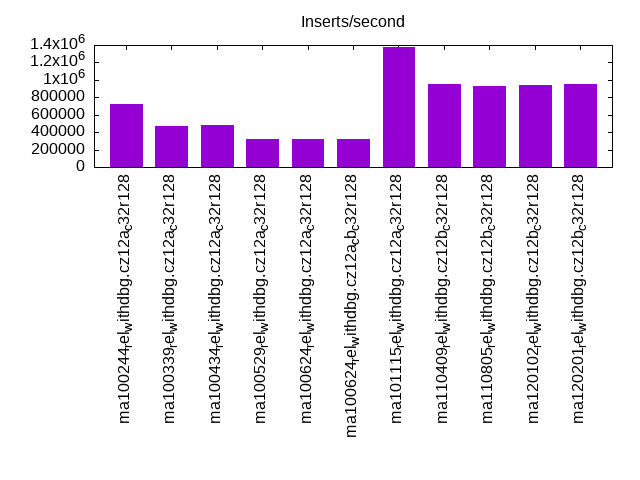
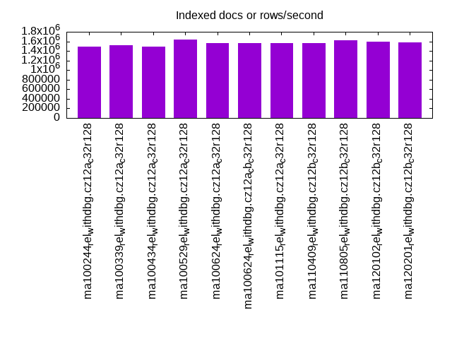
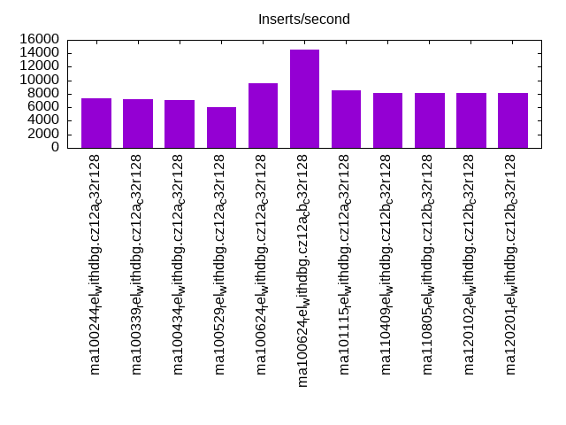
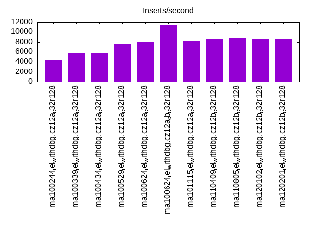
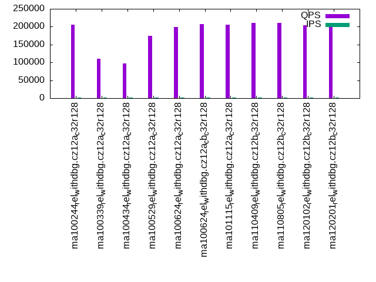
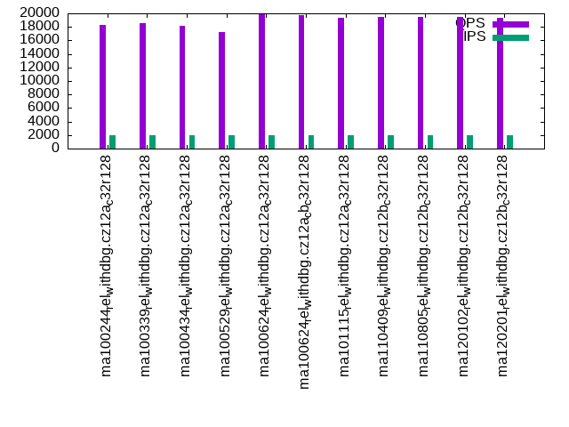
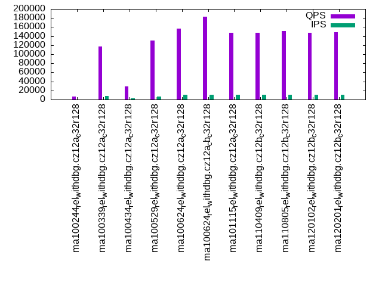
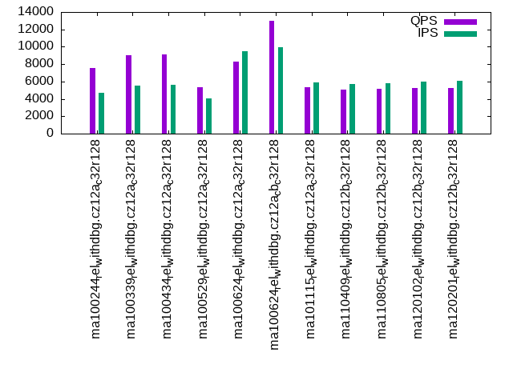
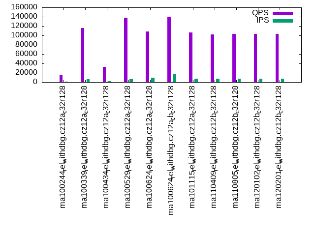
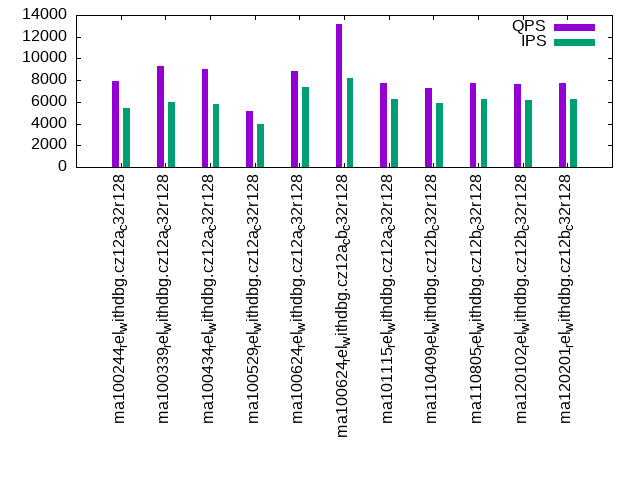

This is a report for the insert benchmark with 4000M docs and 20 client(s). It is generated by scripts (bash, awk, sed) and Tufte might not be impressed. An overview of the insert benchmark is here and a short update is here. Below, by DBMS, I mean DBMS+version.config. An example is my8020.c10b40 where my means MySQL, 8020 is version 8.0.20 and c10b40 is the name for the configuration file.
The test server has 48 cores, 128G RAM and 2 NVMe devices using SW RAID. The benchmark was run with 20 clients and there were 1 or 3 connections per client (1 for queries or inserts without rate limits, 1+1 for rate limited inserts+deletes). It uses 20 tables with a table per client. It loads 200M rows per table without secondary indexes, creates 3 secondary indexes per table, then inserts 4m+1m rows per table with a delete per insert to avoid growing the table. It then does 6 read+write tests for 3600s each that do queries as fast as possible with 100,100,500,500,1000,1000 inserts/s and the same for deletes/s per client concurrent with the queries. The database is larger than RAM and most tests are IO-bound except for the range query (qr*) tests that frequently have a cached working set. Clients and the DBMS share one server.
The tested DBMS are:
The numbers are inserts/s for l.i0, l.i1 and l.i2, indexed docs (or rows) /s for l.x and queries/s for qr100, qp100 thru qr1000, qp1000" The values are the average rate over the entire test for inserts (IPS) and queries (QPS). The range of values for IPS and QPS is split into 3 parts: bottom 25%, middle 50%, top 25%. Values in the bottom 25% have a red background, values in the top 25% have a green background and values in the middle have no color. A gray background is used for values that can be ignored because the DBMS did not sustain the target insert rate. Red backgrounds are not used when the minimum value is within 80% of the max value.
| dbms | l.i0 | l.x | l.i1 | l.i2 | qr100 | qp100 | qr500 | qp500 | qr1000 | qp1000 |
|---|---|---|---|---|---|---|---|---|---|---|
| ma100244_rel_withdbg.cz12a_c32r128 | 720072 | 1497006 | 7388 | 4375 | 205319 | 18348 | 6618 | 7508 | 15923 | 7890 |
| ma100339_rel_withdbg.cz12a_c32r128 | 474046 | 1521491 | 7154 | 5848 | 110132 | 18600 | 116549 | 9008 | 116054 | 9263 |
| ma100434_rel_withdbg.cz12a_c32r128 | 479099 | 1497006 | 7121 | 5821 | 96421 | 18150 | 29444 | 9092 | 32957 | 8998 |
| ma100529_rel_withdbg.cz12a_c32r128 | 324386 | 1631987 | 6084 | 7639 | 174907 | 17220 | 129916 | 5315 | 137830 | 5163 |
| ma100624_rel_withdbg.cz12a_c32r128 | 321002 | 1570475 | 9558 | 8058 | 198465 | 19902 | 156189 | 8301 | 108885 | 8828 |
| ma100624_rel_withdbg.cz12a_cb_c32r128 | 318522 | 1571092 | 14493 | 11331 | 207607 | 19731 | 183467 | 12961 | 140492 | 13190 |
| ma101115_rel_withdbg.cz12a_c32r128 | 1376936 | 1568012 | 8495 | 8190 | 205853 | 19307 | 147602 | 5335 | 106800 | 7728 |
| ma110409_rel_withdbg.cz12b_c32r128 | 950344 | 1558239 | 8125 | 8613 | 211249 | 19441 | 147906 | 5075 | 101699 | 7301 |
| ma110805_rel_withdbg.cz12b_c32r128 | 931749 | 1620089 | 8166 | 8795 | 210309 | 19532 | 150748 | 5177 | 103015 | 7755 |
| ma120102_rel_withdbg.cz12b_c32r128 | 940070 | 1598082 | 8156 | 8595 | 203656 | 19441 | 148025 | 5213 | 103026 | 7600 |
| ma120201_rel_withdbg.cz12b_c32r128 | 947194 | 1573564 | 8193 | 8540 | 206808 | 19379 | 149027 | 5275 | 102838 | 7703 |
This table has relative throughput, throughput for the DBMS relative to the DBMS in the first line, using the absolute throughput from the previous table. Values less than 0.95 have a yellow background. Values greater than 1.05 have a blue background.
| dbms | l.i0 | l.x | l.i1 | l.i2 | qr100 | qp100 | qr500 | qp500 | qr1000 | qp1000 |
|---|---|---|---|---|---|---|---|---|---|---|
| ma100244_rel_withdbg.cz12a_c32r128 | 1.00 | 1.00 | 1.00 | 1.00 | 1.00 | 1.00 | 1.00 | 1.00 | 1.00 | 1.00 |
| ma100339_rel_withdbg.cz12a_c32r128 | 0.66 | 1.02 | 0.97 | 1.34 | 0.54 | 1.01 | 17.61 | 1.20 | 7.29 | 1.17 |
| ma100434_rel_withdbg.cz12a_c32r128 | 0.67 | 1.00 | 0.96 | 1.33 | 0.47 | 0.99 | 4.45 | 1.21 | 2.07 | 1.14 |
| ma100529_rel_withdbg.cz12a_c32r128 | 0.45 | 1.09 | 0.82 | 1.75 | 0.85 | 0.94 | 19.63 | 0.71 | 8.66 | 0.65 |
| ma100624_rel_withdbg.cz12a_c32r128 | 0.45 | 1.05 | 1.29 | 1.84 | 0.97 | 1.08 | 23.60 | 1.11 | 6.84 | 1.12 |
| ma100624_rel_withdbg.cz12a_cb_c32r128 | 0.44 | 1.05 | 1.96 | 2.59 | 1.01 | 1.08 | 27.72 | 1.73 | 8.82 | 1.67 |
| ma101115_rel_withdbg.cz12a_c32r128 | 1.91 | 1.05 | 1.15 | 1.87 | 1.00 | 1.05 | 22.30 | 0.71 | 6.71 | 0.98 |
| ma110409_rel_withdbg.cz12b_c32r128 | 1.32 | 1.04 | 1.10 | 1.97 | 1.03 | 1.06 | 22.35 | 0.68 | 6.39 | 0.93 |
| ma110805_rel_withdbg.cz12b_c32r128 | 1.29 | 1.08 | 1.11 | 2.01 | 1.02 | 1.06 | 22.78 | 0.69 | 6.47 | 0.98 |
| ma120102_rel_withdbg.cz12b_c32r128 | 1.31 | 1.07 | 1.10 | 1.96 | 0.99 | 1.06 | 22.37 | 0.69 | 6.47 | 0.96 |
| ma120201_rel_withdbg.cz12b_c32r128 | 1.32 | 1.05 | 1.11 | 1.95 | 1.01 | 1.06 | 22.52 | 0.70 | 6.46 | 0.98 |
This lists the average rate of inserts/s for the tests that do inserts concurrent with queries. For such tests the query rate is listed in the table above. The read+write tests are setup so that the insert rate should match the target rate every second. Cells that are not at least 95% of the target have a red background to indicate a failure to satisfy the target.
| dbms | qr100.L1 | qp100.L2 | qr500.L3 | qp500.L4 | qr1000.L5 | qp1000.L6 |
|---|---|---|---|---|---|---|
| ma100244_rel_withdbg.cz12a_c32r128 | 1987 | 1987 | 590 | 4741 | 826 | 5478 |
| ma100339_rel_withdbg.cz12a_c32r128 | 1987 | 1987 | 7888 | 5494 | 6630 | 5976 |
| ma100434_rel_withdbg.cz12a_c32r128 | 1987 | 1987 | 2211 | 5621 | 2110 | 5841 |
| ma100529_rel_withdbg.cz12a_c32r128 | 1987 | 1987 | 6073 | 4017 | 6516 | 3954 |
| ma100624_rel_withdbg.cz12a_c32r128 | 1987 | 1987 | 9936 | 9451 | 9082 | 7324 |
| ma100624_rel_withdbg.cz12a_cb_c32r128 | 1987 | 1987 | 9936 | 9936 | 17033 | 8210 |
| ma101115_rel_withdbg.cz12a_c32r128 | 1987 | 1987 | 9936 | 5906 | 7637 | 6253 |
| ma110409_rel_withdbg.cz12b_c32r128 | 1987 | 1987 | 9934 | 5729 | 7580 | 5873 |
| ma110805_rel_withdbg.cz12b_c32r128 | 1987 | 1988 | 9936 | 5848 | 7774 | 6304 |
| ma120102_rel_withdbg.cz12b_c32r128 | 1987 | 1987 | 9934 | 5947 | 7744 | 6196 |
| ma120201_rel_withdbg.cz12b_c32r128 | 1987 | 1987 | 9934 | 6046 | 7680 | 6300 |
| target | 2000 | 2000 | 10000 | 10000 | 20000 | 20000 |
l.i0: load without secondary indexes. Graphs for performance per 1-second interval are here.
Average throughput:
Insert response time histogram: each cell has the percentage of responses that take <= the time in the header and max is the max response time in seconds. For the max column values in the top 25% of the range have a red background and in the bottom 25% of the range have a green background. The red background is not used when the min value is within 80% of the max value.
| dbms | 256us | 1ms | 4ms | 16ms | 64ms | 256ms | 1s | 4s | 16s | gt | max |
|---|---|---|---|---|---|---|---|---|---|---|---|
| ma100244_rel_withdbg.cz12a_c32r128 | 0.213 | 99.634 | 0.061 | 0.007 | 0.084 | 0.192 | |||||
| ma100339_rel_withdbg.cz12a_c32r128 | 0.091 | 98.911 | 0.670 | 0.015 | 0.115 | 0.198 | 0.635 | ||||
| ma100434_rel_withdbg.cz12a_c32r128 | 0.082 | 99.135 | 0.457 | 0.014 | 0.115 | 0.196 | 0.621 | ||||
| ma100529_rel_withdbg.cz12a_c32r128 | 0.066 | 1.816 | 97.780 | 0.128 | 0.101 | 0.108 | 0.575 | ||||
| ma100624_rel_withdbg.cz12a_c32r128 | 0.070 | 0.364 | 97.031 | 2.451 | 0.085 | nonzero | 0.543 | ||||
| ma100624_rel_withdbg.cz12a_cb_c32r128 | 0.067 | 0.303 | 97.172 | 2.374 | 0.085 | nonzero | 0.561 | ||||
| ma101115_rel_withdbg.cz12a_c32r128 | 2.176 | 97.506 | 0.081 | 0.150 | 0.086 | 0.224 | |||||
| ma110409_rel_withdbg.cz12b_c32r128 | 2.336 | 96.213 | 1.209 | 0.159 | 0.084 | nonzero | 0.324 | ||||
| ma110805_rel_withdbg.cz12b_c32r128 | 1.589 | 97.250 | 0.928 | 0.149 | 0.084 | 0.235 | |||||
| ma120102_rel_withdbg.cz12b_c32r128 | 1.730 | 96.999 | 1.035 | 0.151 | 0.085 | 0.232 | |||||
| ma120201_rel_withdbg.cz12b_c32r128 | 1.799 | 97.256 | 0.717 | 0.143 | 0.085 | 0.239 |
Performance metrics for the DBMS listed above. Some are normalized by throughput, others are not. Legend for results is here.
ips qps rps rmbps wps wmbps rpq rkbpq wpi wkbpi csps cpups cspq cpupq dbgb1 dbgb2 rss maxop p50 p99 tag 720072 0 2 0.0 4954.4 260.3 0.000 0.000 0.007 0.370 99622 46.0 0.138 31 263.2 364.0 104.1 0.192 37060 31766 ma100244_rel_withdbg.cz12a_c32r128 474046 0 4 0.1 3557.9 188.7 0.000 0.000 0.008 0.408 75457 48.0 0.159 49 263.2 365.1 104.4 0.635 29668 200 ma100339_rel_withdbg.cz12a_c32r128 479099 0 4 0.1 3576.8 189.6 0.000 0.000 0.007 0.405 76364 48.0 0.159 48 263.2 365.1 NA 0.621 29868 200 ma100434_rel_withdbg.cz12a_c32r128 324386 0 2 0.1 4650.6 154.7 0.000 0.000 0.014 0.488 922337 49.5 2.843 73 263.2 365.2 101.9 0.575 17986 200 ma100529_rel_withdbg.cz12a_c32r128 321002 0 2 0.1 2266.2 94.3 0.000 0.000 0.007 0.301 907554 50.9 2.827 76 263.2 365.1 100.2 0.543 15988 14385 ma100624_rel_withdbg.cz12a_c32r128 318522 0 2 0.0 2243.9 93.5 0.000 0.000 0.007 0.301 911502 51.0 2.862 77 263.2 365.1 101.1 0.561 15783 14184 ma100624_rel_withdbg.cz12a_cb_c32r128 1376936 0 4 0.0 8609.5 371.5 0.000 0.000 0.006 0.276 236722 49.4 0.172 17 263.2 364.0 101.3 0.224 68747 60935 ma101115_rel_withdbg.cz12a_c32r128 950344 0 4 0.1 5275.4 245.6 0.000 0.000 0.006 0.265 528752 45.8 0.556 23 263.2 364.0 101.3 0.324 35062 24273 ma110409_rel_withdbg.cz12b_c32r128 931749 0 5 0.0 5176.2 241.0 0.000 0.000 0.006 0.265 526443 45.6 0.565 23 263.2 364.0 101.2 0.235 35262 25173 ma110805_rel_withdbg.cz12b_c32r128 940070 0 3 0.0 5213.2 243.0 0.000 0.000 0.006 0.265 539705 45.8 0.574 23 263.2 364.0 101.2 0.232 35273 24973 ma120102_rel_withdbg.cz12b_c32r128 947194 0 3 0.0 5257.3 244.9 0.000 0.000 0.006 0.265 536746 45.8 0.567 23 263.2 364.0 101.2 0.239 36860 25672 ma120201_rel_withdbg.cz12b_c32r128
Average values from iostat.
r/s rkB/s rrqm/s %rrqm r_await rareq-s w/s wkB/s wrqm/s %wrqm w_await wareq-s d/s dkB/s drqm/s %drqm d_await dareq-s f/s f_await aqu-sz %util 1.817 10.85 0.535 1.004 0.101 2.335 4705.4 267022 379.5 7.807 2.239 61.73 0.000 0.000 0.000 0.000 0.000 0.000 0.000 0.000 8.858 21.80 ma100244_rel_withdbg.cz12a_c32r128 2.634 20.84 1.455 21.96 0.085 5.651 3403.3 193500 216.7 6.247 1.864 60.70 0.000 0.000 0.000 0.000 0.000 0.000 0.000 0.000 5.448 16.26 ma100339_rel_withdbg.cz12a_c32r128 0.678 9.252 0.195 8.045 0.075 6.340 3420.0 194315 190.9 5.746 1.998 60.77 0.000 0.000 0.000 0.000 0.000 0.000 0.000 0.000 5.896 16.07 ma100434_rel_withdbg.cz12a_c32r128 0.760 16.23 0.232 0.756 0.062 4.780 4470.7 158578 234.3 4.817 0.702 35.33 0.000 0.000 0.000 0.000 0.000 0.000 0.000 0.000 3.202 13.52 ma100529_rel_withdbg.cz12a_c32r128 0.792 15.09 0.274 2.440 0.060 4.662 2180.5 96806.7 136.1 6.281 1.494 50.52 0.000 0.000 0.000 0.000 0.000 0.000 0.000 0.000 2.847 7.105 ma100624_rel_withdbg.cz12a_c32r128 0.897 7.640 0.314 2.035 0.056 4.509 2159.2 95951.1 130.7 6.207 1.598 51.22 0.000 0.000 0.000 0.000 0.000 0.000 0.000 0.000 2.902 6.999 ma100624_rel_withdbg.cz12a_cb_c32r128 0.517 6.348 0.053 0.975 0.141 4.265 8189.2 380485 447.8 5.517 2.329 49.03 0.000 0.000 0.000 0.000 0.000 0.000 0.000 0.000 17.20 24.10 ma101115_rel_withdbg.cz12a_c32r128 2.134 21.23 0.807 2.726 0.156 5.983 4964.9 251840 407.3 7.828 2.124 53.02 0.000 0.000 0.000 0.000 0.000 0.000 0.000 0.000 10.59 19.90 ma110409_rel_withdbg.cz12b_c32r128 2.381 14.26 0.743 3.250 0.126 3.779 4878.2 247192 403.1 7.535 2.257 53.28 18.36 476531 0.003 0.000 0.001 117.6 0.000 0.000 11.17 19.88 ma110805_rel_withdbg.cz12b_c32r128 0.374 4.129 0.077 3.398 0.111 4.088 4906.2 249003 359.3 7.223 2.137 53.46 0.000 0.000 0.000 0.000 0.000 0.000 0.000 0.000 10.51 19.59 ma120102_rel_withdbg.cz12b_c32r128 1.855 13.57 0.702 5.233 0.143 5.254 4951.5 251214 407.8 7.999 2.251 53.40 0.000 0.000 0.000 0.000 0.000 0.000 0.000 0.000 11.37 19.81 ma120201_rel_withdbg.cz12b_c32r128
l.x: create secondary indexes.
Average throughput:
Performance metrics for the DBMS listed above. Some are normalized by throughput, others are not. Legend for results is here.
ips qps rps rmbps wps wmbps rpq rkbpq wpi wkbpi csps cpups cspq cpupq dbgb1 dbgb2 rss maxop p50 p99 tag 1497006 0 14794 1314.2 18359.2 1562.8 0.010 0.899 0.012 1.069 62505 19.9 0.042 6 605.8 706.6 103.2 0.003 NA NA ma100244_rel_withdbg.cz12a_c32r128 1521491 0 15085 1330.2 18714.1 1588.8 0.010 0.895 0.012 1.069 62309 20.8 0.041 7 605.8 707.7 104.7 0.006 NA NA ma100339_rel_withdbg.cz12a_c32r128 1497006 0 14981 1314.1 18375.2 1563.5 0.010 0.899 0.012 1.069 61675 20.4 0.041 7 599.6 701.5 NA 0.005 NA NA ma100434_rel_withdbg.cz12a_c32r128 1631987 0 16203 1434.4 19181.6 1613.0 0.010 0.900 0.012 1.012 111377 24.1 0.068 7 599.6 701.6 101.2 0.006 NA NA ma100529_rel_withdbg.cz12a_c32r128 1570475 0 17128 1403.0 18968.0 1564.1 0.011 0.915 0.012 1.020 107917 22.7 0.069 7 557.5 659.4 100.7 0.006 NA NA ma100624_rel_withdbg.cz12a_c32r128 1571092 0 17098 1405.1 19645.3 1574.7 0.011 0.916 0.013 1.026 108601 23.4 0.069 7 557.5 659.4 100.7 0.006 NA NA ma100624_rel_withdbg.cz12a_cb_c32r128 1568012 0 17087 1400.6 18367.8 1547.4 0.011 0.915 0.012 1.011 89925 25.0 0.057 8 557.5 658.3 101.6 0.002 NA NA ma101115_rel_withdbg.cz12a_c32r128 1558239 0 16997 1393.2 19443.7 1554.1 0.011 0.916 0.012 1.021 99966 24.8 0.064 8 557.5 658.3 100.7 0.004 NA NA ma110409_rel_withdbg.cz12b_c32r128 1620089 0 17632 1445.0 20371.5 1617.2 0.011 0.913 0.013 1.022 101334 25.7 0.063 8 557.5 658.3 100.7 0.004 NA NA ma110805_rel_withdbg.cz12b_c32r128 1598082 0 17426 1430.3 19800.8 1593.5 0.011 0.916 0.012 1.021 110023 24.4 0.069 7 557.5 658.3 101.1 0.002 NA NA ma120102_rel_withdbg.cz12b_c32r128 1573564 0 17167 1404.3 19721.9 1572.1 0.011 0.914 0.013 1.023 104631 24.5 0.066 7 557.5 658.3 100.7 0.004 NA NA ma120201_rel_withdbg.cz12b_c32r128
Average values from iostat.
r/s rkB/s rrqm/s %rrqm r_await rareq-s w/s wkB/s wrqm/s %wrqm w_await wareq-s d/s dkB/s drqm/s %drqm d_await dareq-s f/s f_await aqu-sz %util 17127.8 1436669 0.000 0.000 0.564 106.4 18968.0 1601662 0.000 0.000 23.91 103.3 0.000 0.000 0.000 0.000 0.000 0.000 0.000 0.000 289.9 97.49 ma100624_rel_withdbg.cz12a_c32r128 17098.1 1438847 0.000 0.000 0.579 108.0 19645.3 1612530 0.000 0.000 18.61 103.4 0.000 0.000 0.000 0.000 0.000 0.000 0.000 0.000 253.2 98.49 ma100624_rel_withdbg.cz12a_cb_c32r128 17087.0 1434239 0.000 0.000 0.589 106.9 18367.8 1584488 0.000 0.000 20.07 98.08 0.000 0.000 0.000 0.000 0.000 0.000 0.000 0.000 308.9 99.26 ma101115_rel_withdbg.cz12a_c32r128 16996.9 1426682 0.000 0.000 0.586 106.8 19443.7 1591413 0.000 0.000 23.15 92.00 0.000 0.000 0.000 0.000 0.000 0.000 0.000 0.000 346.9 99.16 ma110409_rel_withdbg.cz12b_c32r128 17631.6 1479634 0.000 0.000 0.593 106.1 20371.5 1655982 0.000 0.000 19.82 92.76 0.000 0.000 0.000 0.000 0.000 0.000 0.000 0.000 280.9 98.65 ma110805_rel_withdbg.cz12b_c32r128 17426.5 1464632 0.000 0.000 0.576 106.9 19800.8 1631794 0.000 0.000 34.67 93.84 0.000 0.000 0.000 0.000 0.000 0.000 0.000 0.000 438.2 96.76 ma120102_rel_withdbg.cz12b_c32r128 17166.6 1438027 0.000 0.000 0.574 106.3 19721.9 1609827 0.000 0.000 26.89 93.85 0.000 0.000 0.000 0.000 0.000 0.000 0.000 0.000 366.2 98.42 ma120201_rel_withdbg.cz12b_c32r128
l.i1: continue load after secondary indexes created with 50 inserts per transaction. Graphs for performance per 1-second interval are here.
Average throughput:
Insert response time histogram: each cell has the percentage of responses that take <= the time in the header and max is the max response time in seconds. For the max column values in the top 25% of the range have a red background and in the bottom 25% of the range have a green background. The red background is not used when the min value is within 80% of the max value.
| dbms | 256us | 1ms | 4ms | 16ms | 64ms | 256ms | 1s | 4s | 16s | gt | max |
|---|---|---|---|---|---|---|---|---|---|---|---|
| ma100244_rel_withdbg.cz12a_c32r128 | 0.003 | 24.679 | 50.953 | 24.320 | 0.044 | 2.080 | |||||
| ma100339_rel_withdbg.cz12a_c32r128 | 0.015 | 26.544 | 45.666 | 27.775 | 0.537 | ||||||
| ma100434_rel_withdbg.cz12a_c32r128 | 0.011 | 24.206 | 48.184 | 27.598 | 0.608 | ||||||
| ma100529_rel_withdbg.cz12a_c32r128 | 0.006 | 8.128 | 66.363 | 25.502 | nonzero | 2.436 | |||||
| ma100624_rel_withdbg.cz12a_c32r128 | 0.108 | 56.001 | 24.652 | 19.239 | 0.607 | ||||||
| ma100624_rel_withdbg.cz12a_cb_c32r128 | 0.001 | 3.442 | 73.016 | 11.682 | 11.859 | 0.399 | |||||
| ma101115_rel_withdbg.cz12a_c32r128 | 0.160 | 33.638 | 46.882 | 19.320 | 0.654 | ||||||
| ma110409_rel_withdbg.cz12b_c32r128 | 0.211 | 25.979 | 54.770 | 19.041 | 0.750 | ||||||
| ma110805_rel_withdbg.cz12b_c32r128 | 0.244 | 26.350 | 54.831 | 18.575 | 0.777 | ||||||
| ma120102_rel_withdbg.cz12b_c32r128 | 0.233 | 27.485 | 53.202 | 19.079 | 0.832 | ||||||
| ma120201_rel_withdbg.cz12b_c32r128 | 0.290 | 28.203 | 52.362 | 19.144 | 0.777 |
Delete response time histogram: each cell has the percentage of responses that take <= the time in the header and max is the max response time in seconds. For the max column values in the top 25% of the range have a red background and in the bottom 25% of the range have a green background. The red background is not used when the min value is within 80% of the max value.
| dbms | 256us | 1ms | 4ms | 16ms | 64ms | 256ms | 1s | 4s | 16s | gt | max |
|---|---|---|---|---|---|---|---|---|---|---|---|
| ma100244_rel_withdbg.cz12a_c32r128 | 0.115 | 64.623 | 11.640 | 23.620 | 0.001 | 1.504 | |||||
| ma100339_rel_withdbg.cz12a_c32r128 | 0.188 | 66.384 | 5.748 | 27.680 | 0.344 | ||||||
| ma100434_rel_withdbg.cz12a_c32r128 | 0.170 | 66.183 | 6.234 | 27.413 | 0.413 | ||||||
| ma100529_rel_withdbg.cz12a_c32r128 | 0.110 | 65.024 | 12.639 | 22.227 | nonzero | 2.107 | |||||
| ma100624_rel_withdbg.cz12a_c32r128 | 0.270 | 72.879 | 8.073 | 18.777 | 0.548 | ||||||
| ma100624_rel_withdbg.cz12a_cb_c32r128 | 1.374 | 35.287 | 45.345 | 6.276 | 11.718 | 0.359 | |||||
| ma101115_rel_withdbg.cz12a_c32r128 | 2.115 | 60.026 | 18.746 | 19.112 | 0.650 | ||||||
| ma110409_rel_withdbg.cz12b_c32r128 | 2.227 | 47.123 | 31.795 | 18.855 | 0.648 | ||||||
| ma110805_rel_withdbg.cz12b_c32r128 | 2.398 | 47.504 | 31.718 | 18.380 | 0.778 | ||||||
| ma120102_rel_withdbg.cz12b_c32r128 | 2.263 | 47.833 | 31.008 | 18.896 | 0.771 | ||||||
| ma120201_rel_withdbg.cz12b_c32r128 | 2.511 | 48.182 | 30.350 | 18.957 | 0.768 |
Performance metrics for the DBMS listed above. Some are normalized by throughput, others are not. Legend for results is here.
ips qps rps rmbps wps wmbps rpq rkbpq wpi wkbpi csps cpups cspq cpupq dbgb1 dbgb2 rss maxop p50 p99 tag 7388 0 42742 667.8 73266.3 1497.3 5.786 92.569 9.918 207.546 494451 21.9 66.931 1423 817.0 919.9 104.5 2.080 200 100 ma100244_rel_withdbg.cz12a_c32r128 7154 0 42816 669.0 72232.5 1507.4 5.985 95.758 10.097 215.768 490568 17.9 68.575 1201 797.3 899.6 104.3 0.537 200 150 ma100339_rel_withdbg.cz12a_c32r128 7121 0 42922 670.6 71942.0 1507.3 6.028 96.442 10.103 216.763 494953 17.9 69.510 1207 797.3 899.6 NA 0.608 200 150 ma100434_rel_withdbg.cz12a_c32r128 6084 0 31858 497.8 32304.6 879.5 5.237 83.785 5.310 148.038 507287 9.6 83.386 757 780.3 883.4 101.7 2.436 250 100 ma100529_rel_withdbg.cz12a_c32r128 9558 0 57071 891.7 56346.3 1542.3 5.971 95.535 5.895 165.235 825509 16.9 86.369 849 728.9 831.1 100.4 0.607 500 150 ma100624_rel_withdbg.cz12a_c32r128 14493 0 36233 565.9 49901.0 1361.8 2.500 39.984 3.443 96.219 791516 22.2 54.615 735 732.3 845.2 100.4 0.399 749 150 ma100624_rel_withdbg.cz12a_cb_c32r128 8495 0 50842 794.4 49930.5 1365.2 5.985 95.753 5.877 164.559 946178 16.8 111.378 949 730.2 832.4 100.4 0.654 450 150 ma101115_rel_withdbg.cz12a_c32r128 8125 0 49037 766.2 49510.8 1315.9 6.035 96.560 6.094 165.848 1055659 15.1 129.926 892 730.3 832.6 100.4 0.750 400 150 ma110409_rel_withdbg.cz12b_c32r128 8166 0 49291 770.1 49595.2 1323.1 6.036 96.567 6.073 165.907 1076831 15.3 131.860 899 730.5 832.8 100.4 0.777 400 150 ma110805_rel_withdbg.cz12b_c32r128 8156 0 49224 769.1 49544.2 1319.9 6.036 96.563 6.075 165.723 1045960 15.3 128.249 900 730.3 832.6 100.4 0.832 450 150 ma120102_rel_withdbg.cz12b_c32r128 8193 0 49440 772.5 49500.7 1323.2 6.034 96.543 6.042 165.375 1038649 14.9 126.768 873 730.3 832.6 100.4 0.777 450 150 ma120201_rel_withdbg.cz12b_c32r128
Average values from iostat.
r/s rkB/s rrqm/s %rrqm r_await rareq-s w/s wkB/s wrqm/s %wrqm w_await wareq-s d/s dkB/s drqm/s %drqm d_await dareq-s f/s f_await aqu-sz %util 20478.0 327574 4.557 0.046 0.220 16.00 72802.7 1533575 548.0 0.729 0.061 21.27 0.000 0.000 0.000 0.000 0.000 0.000 0.000 0.000 9.005 98.09 ma100244_rel_withdbg.cz12a_c32r128 20397.2 326312 5.690 0.018 0.212 16.00 71818.6 1543798 494.1 0.647 0.064 21.82 0.000 0.000 0.000 0.000 0.000 0.000 0.000 0.000 9.101 99.94 ma100339_rel_withdbg.cz12a_c32r128 20574.0 329160 1.485 0.005 0.215 16.00 71539.9 1543790 481.9 0.642 0.066 21.89 0.000 0.000 0.000 0.000 0.000 0.000 0.000 0.000 9.272 99.94 ma100434_rel_withdbg.cz12a_c32r128 14608.2 233694 2.853 0.011 0.130 16.00 32115.2 900890 264.5 0.793 0.051 28.09 0.000 0.000 0.000 0.000 0.000 0.000 0.000 0.000 3.521 99.80 ma100529_rel_withdbg.cz12a_c32r128 27840.6 445425 0.528 0.002 0.222 16.00 55689.9 1579526 715.5 1.236 0.073 28.45 0.000 0.000 0.000 0.000 0.000 0.000 0.000 0.000 10.31 99.99 ma100624_rel_withdbg.cz12a_c32r128 17113.7 273685 0.626 0.003 0.189 15.99 49097.3 1394711 865.7 1.437 0.069 28.53 0.000 0.000 0.000 0.000 0.000 0.000 0.000 0.000 6.829 99.98 ma100624_rel_withdbg.cz12a_cb_c32r128 24486.3 391759 0.256 0.001 0.196 16.00 49358.6 1398102 608.6 1.211 0.067 28.34 0.000 0.000 0.000 0.000 0.000 0.000 0.000 0.000 8.134 99.97 ma101115_rel_withdbg.cz12a_c32r128 23363.7 373795 0.997 0.007 0.181 16.00 47698.7 1347736 1866.5 3.536 0.054 28.27 0.000 0.000 0.000 0.000 0.000 0.000 0.000 0.000 6.784 99.98 ma110409_rel_withdbg.cz12b_c32r128 23394.5 374283 0.480 0.002 0.170 16.00 47934.7 1355104 1716.5 3.291 0.051 28.28 0.000 0.000 0.000 0.000 0.000 0.000 0.000 0.000 6.478 99.98 ma110805_rel_withdbg.cz12b_c32r128 23518.0 376260 0.511 0.002 0.185 16.00 47828.9 1351815 1773.1 3.338 0.058 28.27 0.000 0.000 0.000 0.000 0.000 0.000 0.000 0.000 7.142 99.98 ma120102_rel_withdbg.cz12b_c32r128 23600.3 377578 0.543 0.002 0.189 16.00 47944.5 1355179 1611.9 3.009 0.064 28.28 0.000 0.000 0.000 0.000 0.000 0.000 0.000 0.000 7.535 99.98 ma120201_rel_withdbg.cz12b_c32r128
l.i2: continue load after secondary indexes created with 5 inserts per transaction. Graphs for performance per 1-second interval are here.
Average throughput:
Insert response time histogram: each cell has the percentage of responses that take <= the time in the header and max is the max response time in seconds. For the max column values in the top 25% of the range have a red background and in the bottom 25% of the range have a green background. The red background is not used when the min value is within 80% of the max value.
| dbms | 256us | 1ms | 4ms | 16ms | 64ms | 256ms | 1s | 4s | 16s | gt | max |
|---|---|---|---|---|---|---|---|---|---|---|---|
| ma100244_rel_withdbg.cz12a_c32r128 | 0.029 | 8.491 | 41.987 | 46.195 | 3.297 | 0.126 | |||||
| ma100339_rel_withdbg.cz12a_c32r128 | nonzero | 0.061 | 13.532 | 47.504 | 38.625 | 0.278 | 0.081 | ||||
| ma100434_rel_withdbg.cz12a_c32r128 | nonzero | 0.049 | 13.052 | 48.016 | 38.479 | 0.403 | 0.083 | ||||
| ma100529_rel_withdbg.cz12a_c32r128 | nonzero | 0.042 | 11.741 | 64.135 | 23.616 | 0.467 | nonzero | 0.335 | |||
| ma100624_rel_withdbg.cz12a_c32r128 | 0.072 | 53.111 | 17.411 | 29.150 | 0.256 | 0.210 | |||||
| ma100624_rel_withdbg.cz12a_cb_c32r128 | 0.001 | 2.700 | 66.076 | 9.582 | 21.625 | 0.016 | 0.108 | ||||
| ma101115_rel_withdbg.cz12a_c32r128 | nonzero | 0.555 | 55.255 | 14.351 | 29.656 | 0.183 | 0.220 | ||||
| ma110409_rel_withdbg.cz12b_c32r128 | nonzero | 0.724 | 57.698 | 13.052 | 28.407 | 0.119 | 0.214 | ||||
| ma110805_rel_withdbg.cz12b_c32r128 | 0.834 | 58.124 | 13.104 | 27.821 | 0.116 | 0.204 | |||||
| ma120102_rel_withdbg.cz12b_c32r128 | nonzero | 0.809 | 57.156 | 13.437 | 28.496 | 0.102 | 0.193 | ||||
| ma120201_rel_withdbg.cz12b_c32r128 | nonzero | 0.808 | 56.491 | 13.983 | 28.605 | 0.113 | 0.251 |
Delete response time histogram: each cell has the percentage of responses that take <= the time in the header and max is the max response time in seconds. For the max column values in the top 25% of the range have a red background and in the bottom 25% of the range have a green background. The red background is not used when the min value is within 80% of the max value.
| dbms | 256us | 1ms | 4ms | 16ms | 64ms | 256ms | 1s | 4s | 16s | gt | max |
|---|---|---|---|---|---|---|---|---|---|---|---|
| ma100244_rel_withdbg.cz12a_c32r128 | nonzero | 0.151 | 23.420 | 27.833 | 46.288 | 2.308 | 0.101 | ||||
| ma100339_rel_withdbg.cz12a_c32r128 | nonzero | 0.267 | 30.944 | 30.530 | 38.167 | 0.093 | 0.098 | ||||
| ma100434_rel_withdbg.cz12a_c32r128 | nonzero | 0.230 | 30.370 | 31.136 | 38.084 | 0.180 | 0.075 | ||||
| ma100529_rel_withdbg.cz12a_c32r128 | nonzero | 0.283 | 31.504 | 46.825 | 21.298 | 0.090 | nonzero | 0.703 | |||
| ma100624_rel_withdbg.cz12a_c32r128 | 0.177 | 60.696 | 10.016 | 29.003 | 0.108 | 0.182 | |||||
| ma100624_rel_withdbg.cz12a_cb_c32r128 | 0.005 | 13.593 | 60.262 | 6.099 | 20.040 | 0.002 | 0.088 | ||||
| ma101115_rel_withdbg.cz12a_c32r128 | nonzero | 1.782 | 60.894 | 7.878 | 29.379 | 0.067 | 0.144 | ||||
| ma110409_rel_withdbg.cz12b_c32r128 | nonzero | 1.715 | 62.708 | 7.358 | 28.132 | 0.087 | 0.207 | ||||
| ma110805_rel_withdbg.cz12b_c32r128 | nonzero | 1.938 | 62.936 | 7.485 | 27.557 | 0.084 | 0.202 | ||||
| ma120102_rel_withdbg.cz12b_c32r128 | 1.867 | 62.252 | 7.573 | 28.233 | 0.074 | 0.183 | |||||
| ma120201_rel_withdbg.cz12b_c32r128 | nonzero | 1.858 | 61.851 | 7.864 | 28.342 | 0.085 | 0.214 |
Performance metrics for the DBMS listed above. Some are normalized by throughput, others are not. Legend for results is here.
ips qps rps rmbps wps wmbps rpq rkbpq wpi wkbpi csps cpups cspq cpupq dbgb1 dbgb2 rss maxop p50 p99 tag 4375 0 39357 615.0 62103.1 1377.5 8.995 143.941 14.194 322.390 331132 16.7 75.680 1832 817.0 919.9 104.5 0.126 140 75 ma100244_rel_withdbg.cz12a_c32r128 5848 0 39341 614.7 60893.3 1363.8 6.727 107.634 10.413 238.809 390131 15.9 66.713 1305 797.3 899.6 104.4 0.081 175 80 ma100339_rel_withdbg.cz12a_c32r128 5821 0 39842 622.5 61517.1 1378.9 6.845 109.516 10.569 242.579 392112 15.9 67.365 1311 797.3 899.6 NA 0.083 175 75 ma100434_rel_withdbg.cz12a_c32r128 7639 0 32369 505.8 30780.9 850.3 4.237 67.794 4.029 113.982 526594 11.2 68.931 704 780.3 883.4 101.7 0.335 445 140 ma100529_rel_withdbg.cz12a_c32r128 8058 0 54095 845.3 50949.7 1417.9 6.713 107.416 6.323 180.189 709884 16.1 88.097 959 728.9 831.1 100.4 0.210 519 90 ma100624_rel_withdbg.cz12a_c32r128 11331 0 32945 514.6 43671.9 1220.7 2.907 46.504 3.854 110.311 701264 20.1 61.887 851 732.3 845.2 100.4 0.108 724 115 ma100624_rel_withdbg.cz12a_cb_c32r128 8190 0 54941 858.4 51258.4 1435.0 6.708 107.332 6.259 179.416 705825 16.1 86.181 944 730.2 832.4 100.4 0.220 529 90 ma101115_rel_withdbg.cz12a_c32r128 8613 0 58399 912.5 51419.6 1432.2 6.780 108.483 5.970 170.273 731506 14.2 84.928 791 730.3 832.6 100.4 0.214 574 95 ma110409_rel_withdbg.cz12b_c32r128 8795 0 59507 929.8 52407.1 1464.4 6.766 108.254 5.959 170.496 750708 14.5 85.356 791 730.5 832.8 100.3 0.204 584 95 ma110805_rel_withdbg.cz12b_c32r128 8595 0 58225 909.8 51069.8 1427.2 6.775 108.392 5.942 170.041 725372 13.9 84.398 776 730.3 832.6 100.3 0.193 574 95 ma120102_rel_withdbg.cz12b_c32r128 8540 0 57848 903.9 50576.3 1417.8 6.774 108.383 5.922 170.004 720764 13.8 84.402 776 730.3 832.6 100.3 0.251 569 95 ma120201_rel_withdbg.cz12b_c32r128
Average values from iostat.
r/s rkB/s rrqm/s %rrqm r_await rareq-s w/s wkB/s wrqm/s %wrqm w_await wareq-s d/s dkB/s drqm/s %drqm d_await dareq-s f/s f_await aqu-sz %util 18551.6 296873 0.108 0.001 0.180 16.00 62110.4 1410882 69.44 0.113 0.048 22.92 0.000 0.000 0.000 0.000 0.000 0.000 0.000 0.000 6.486 100.00 ma100244_rel_withdbg.cz12a_c32r128 18497.3 295951 0.013 0.000 0.185 16.00 60889.6 1396753 75.18 0.126 0.053 23.21 0.000 0.000 0.000 0.000 0.000 0.000 0.000 0.000 6.813 100.0 ma100339_rel_withdbg.cz12a_c32r128 18735.3 299761 0.035 0.000 0.187 16.00 61518.1 1412260 71.16 0.118 0.053 23.22 0.000 0.000 0.000 0.000 0.000 0.000 0.000 0.000 6.939 100.00 ma100434_rel_withdbg.cz12a_c32r128 14867.1 237871 0.019 0.000 0.123 16.00 30738.4 871034 116.5 0.380 0.038 28.35 0.000 0.000 0.000 0.000 0.000 0.000 0.000 0.000 2.983 99.83 ma100529_rel_withdbg.cz12a_c32r128 26334.3 421372 0.351 0.001 0.191 16.00 50627.2 1452159 373.1 0.734 0.061 28.72 0.000 0.000 0.000 0.000 0.000 0.000 0.000 0.000 8.271 100.00 ma100624_rel_withdbg.cz12a_c32r128 15281.5 244428 0.253 0.002 0.168 15.99 43390.1 1250180 334.7 0.766 0.055 28.84 0.000 0.000 0.000 0.000 0.000 0.000 0.000 0.000 4.967 100.00 ma100624_rel_withdbg.cz12a_cb_c32r128 26695.7 427130 0.115 0.000 0.192 16.00 51246.0 1469515 38.66 0.077 0.065 28.71 0.000 0.000 0.000 0.000 0.000 0.000 0.000 0.000 8.611 99.99 ma101115_rel_withdbg.cz12a_c32r128 28113.0 449806 0.077 0.000 0.187 16.00 51075.8 1466765 388.1 0.756 0.059 28.75 0.000 0.000 0.000 0.000 0.000 0.000 0.000 0.000 8.436 100.00 ma110409_rel_withdbg.cz12b_c32r128 28570.4 457117 0.212 0.001 0.183 16.00 52229.7 1499694 225.1 0.431 0.056 28.74 0.000 0.000 0.000 0.000 0.000 0.000 0.000 0.000 8.307 100.00 ma110805_rel_withdbg.cz12b_c32r128 28064.6 449031 0.118 0.000 0.190 16.00 50899.1 1461616 213.1 0.420 0.061 28.75 0.000 0.000 0.000 0.000 0.000 0.000 0.000 0.000 8.650 100.00 ma120102_rel_withdbg.cz12b_c32r128 27797.4 444756 0.054 0.000 0.191 16.00 50568.1 1451930 49.05 0.098 0.068 28.74 0.000 0.000 0.000 0.000 0.000 0.000 0.000 0.000 8.932 100.00 ma120201_rel_withdbg.cz12b_c32r128
qr100.L1: range queries with 100 insert/s per client. Graphs for performance per 1-second interval are here.
Average throughput:
Query response time histogram: each cell has the percentage of responses that take <= the time in the header and max is the max response time in seconds. For max values in the top 25% of the range have a red background and in the bottom 25% of the range have a green background. The red background is not used when the min value is within 80% of the max value.
| dbms | 256us | 1ms | 4ms | 16ms | 64ms | 256ms | 1s | 4s | 16s | gt | max |
|---|---|---|---|---|---|---|---|---|---|---|---|
| ma100244_rel_withdbg.cz12a_c32r128 | 99.817 | 0.164 | 0.019 | nonzero | nonzero | 0.020 | |||||
| ma100339_rel_withdbg.cz12a_c32r128 | 87.112 | 10.420 | 2.468 | nonzero | nonzero | 0.021 | |||||
| ma100434_rel_withdbg.cz12a_c32r128 | 85.187 | 11.193 | 3.619 | nonzero | nonzero | 0.027 | |||||
| ma100529_rel_withdbg.cz12a_c32r128 | 99.826 | 0.152 | 0.019 | 0.002 | 0.001 | nonzero | 0.188 | ||||
| ma100624_rel_withdbg.cz12a_c32r128 | 99.669 | 0.307 | 0.022 | 0.002 | nonzero | 0.057 | |||||
| ma100624_rel_withdbg.cz12a_cb_c32r128 | 99.769 | 0.206 | 0.024 | 0.001 | nonzero | 0.028 | |||||
| ma101115_rel_withdbg.cz12a_c32r128 | 99.602 | 0.371 | 0.026 | 0.001 | nonzero | nonzero | 0.067 | ||||
| ma110409_rel_withdbg.cz12b_c32r128 | 99.628 | 0.347 | 0.023 | 0.001 | nonzero | nonzero | 0.129 | ||||
| ma110805_rel_withdbg.cz12b_c32r128 | 99.647 | 0.330 | 0.022 | 0.001 | nonzero | 0.061 | |||||
| ma120102_rel_withdbg.cz12b_c32r128 | 99.604 | 0.370 | 0.025 | 0.001 | nonzero | nonzero | 0.086 | ||||
| ma120201_rel_withdbg.cz12b_c32r128 | 99.711 | 0.268 | 0.020 | 0.001 | nonzero | nonzero | 0.147 |
Insert response time histogram: each cell has the percentage of responses that take <= the time in the header and max is the max response time in seconds. For max values in the top 25% of the range have a red background and in the bottom 25% of the range have a green background. The red background is not used when the min value is within 80% of the max value.
| dbms | 256us | 1ms | 4ms | 16ms | 64ms | 256ms | 1s | 4s | 16s | gt | max |
|---|---|---|---|---|---|---|---|---|---|---|---|
| ma100244_rel_withdbg.cz12a_c32r128 | 72.930 | 27.070 | 0.049 | ||||||||
| ma100339_rel_withdbg.cz12a_c32r128 | 67.385 | 32.615 | 0.041 | ||||||||
| ma100434_rel_withdbg.cz12a_c32r128 | 62.660 | 37.340 | 0.042 | ||||||||
| ma100529_rel_withdbg.cz12a_c32r128 | 0.700 | 42.426 | 54.956 | 1.917 | 0.508 | ||||||
| ma100624_rel_withdbg.cz12a_c32r128 | 3.926 | 96.032 | 0.042 | 0.097 | |||||||
| ma100624_rel_withdbg.cz12a_cb_c32r128 | 0.003 | 58.079 | 41.917 | 0.051 | |||||||
| ma101115_rel_withdbg.cz12a_c32r128 | 34.028 | 65.840 | 0.132 | 0.135 | |||||||
| ma110409_rel_withdbg.cz12b_c32r128 | 36.332 | 63.514 | 0.154 | 0.153 | |||||||
| ma110805_rel_withdbg.cz12b_c32r128 | 43.944 | 55.979 | 0.076 | 0.119 | |||||||
| ma120102_rel_withdbg.cz12b_c32r128 | 40.008 | 59.843 | 0.149 | 0.121 | |||||||
| ma120201_rel_withdbg.cz12b_c32r128 | 53.100 | 46.850 | 0.050 | 0.180 |
Delete response time histogram: each cell has the percentage of responses that take <= the time in the header and max is the max response time in seconds. For max values in the top 25% of the range have a red background and in the bottom 25% of the range have a green background. The red background is not used when the min value is within 80% of the max value.
| dbms | 256us | 1ms | 4ms | 16ms | 64ms | 256ms | 1s | 4s | 16s | gt | max |
|---|---|---|---|---|---|---|---|---|---|---|---|
| ma100244_rel_withdbg.cz12a_c32r128 | 94.110 | 5.890 | 0.042 | ||||||||
| ma100339_rel_withdbg.cz12a_c32r128 | 96.700 | 3.300 | 0.041 | ||||||||
| ma100434_rel_withdbg.cz12a_c32r128 | 95.610 | 4.390 | 0.043 | ||||||||
| ma100529_rel_withdbg.cz12a_c32r128 | 2.469 | 47.119 | 49.837 | 0.575 | 0.386 | ||||||
| ma100624_rel_withdbg.cz12a_c32r128 | 14.175 | 85.789 | 0.036 | 0.090 | |||||||
| ma100624_rel_withdbg.cz12a_cb_c32r128 | 3.981 | 87.356 | 8.664 | 0.049 | |||||||
| ma101115_rel_withdbg.cz12a_c32r128 | 68.949 | 30.974 | 0.077 | 0.132 | |||||||
| ma110409_rel_withdbg.cz12b_c32r128 | 63.326 | 36.577 | 0.097 | 0.150 | |||||||
| ma110805_rel_withdbg.cz12b_c32r128 | 66.317 | 33.633 | 0.050 | 0.113 | |||||||
| ma120102_rel_withdbg.cz12b_c32r128 | 64.493 | 35.432 | 0.075 | 0.109 | |||||||
| ma120201_rel_withdbg.cz12b_c32r128 | 78.256 | 21.699 | 0.044 | 0.177 |
Performance metrics for the DBMS listed above. Some are normalized by throughput, others are not. Legend for results is here.
ips qps rps rmbps wps wmbps rpq rkbpq wpi wkbpi csps cpups cspq cpupq dbgb1 dbgb2 rss maxop p50 p99 tag 1987 205319 8815 137.7 10601.7 298.7 0.043 0.687 5.336 153.971 1223023 45.2 5.957 106 817.0 919.9 104.5 0.020 10309 9638 ma100244_rel_withdbg.cz12a_c32r128 1987 110132 78011 1218.9 11239.1 316.6 0.708 11.333 5.655 163.114 820753 29.7 7.452 129 797.3 899.6 104.4 0.021 4859 2526 ma100339_rel_withdbg.cz12a_c32r128 1987 96421 82873 1294.9 12027.6 338.7 0.859 13.752 6.052 174.548 754515 28.6 7.825 142 797.3 899.6 NA 0.027 5162 2413 ma100434_rel_withdbg.cz12a_c32r128 1987 174907 8742 136.6 7793.4 215.2 0.050 0.800 3.922 110.876 1111362 44.5 6.354 122 780.3 883.4 101.7 0.188 8905 8023 ma100529_rel_withdbg.cz12a_c32r128 1987 198465 8766 137.0 7097.3 197.7 0.044 0.707 3.571 101.853 1219936 44.5 6.147 108 728.9 831.1 100.4 0.057 10085 9206 ma100624_rel_withdbg.cz12a_c32r128 1987 207607 4585 71.6 4687.7 131.9 0.022 0.353 2.360 67.982 1243420 44.5 5.989 103 732.3 845.2 100.4 0.028 10501 9446 ma100624_rel_withdbg.cz12a_cb_c32r128 1987 205853 8765 137.0 7004.4 196.2 0.043 0.681 3.526 101.128 1257142 44.5 6.107 104 730.2 832.4 100.4 0.067 10517 9606 ma101115_rel_withdbg.cz12a_c32r128 1987 211249 8799 137.5 7121.4 198.2 0.042 0.666 3.585 102.150 1292879 44.6 6.120 101 730.3 832.6 100.4 0.129 10676 9763 ma110409_rel_withdbg.cz12b_c32r128 1987 210309 8800 137.5 7090.5 198.0 0.042 0.670 3.568 102.049 1285223 44.3 6.111 101 730.5 832.8 100.3 0.061 10680 9686 ma110805_rel_withdbg.cz12b_c32r128 1987 203656 8800 137.5 7086.6 198.0 0.043 0.691 3.567 102.033 1249384 44.4 6.135 105 730.3 832.6 100.3 0.086 10325 9446 ma120102_rel_withdbg.cz12b_c32r128 1987 206808 8801 137.5 6761.4 189.7 0.043 0.681 3.403 97.762 1261612 44.2 6.100 103 730.3 832.6 100.3 0.147 10517 9673 ma120201_rel_withdbg.cz12b_c32r128
Average values from iostat.
r/s rkB/s rrqm/s %rrqm r_await rareq-s w/s wkB/s wrqm/s %wrqm w_await wareq-s d/s dkB/s drqm/s %drqm d_await dareq-s f/s f_await aqu-sz %util 4180.6 66888.7 0.006 0.000 0.101 16.00 10694.8 306338 22.22 0.208 0.025 28.64 0.000 0.000 0.000 0.000 0.000 0.000 0.000 0.000 0.692 39.06 ma100244_rel_withdbg.cz12a_c32r128 37184.8 594956 0.001 0.000 0.106 16.00 11317.6 324533 29.32 0.260 0.029 28.67 0.000 0.000 0.000 0.000 0.000 0.000 0.000 0.000 4.252 90.68 ma100339_rel_withdbg.cz12a_c32r128 39384.0 630145 0.019 0.000 0.107 16.00 12103.2 347278 28.74 0.238 0.030 28.69 0.000 0.000 0.000 0.000 0.000 0.000 0.000 0.000 4.536 99.94 ma100434_rel_withdbg.cz12a_c32r128 3957.3 63315.7 0.004 0.000 0.110 16.00 7880.7 220786 30.84 0.631 0.029 30.38 0.000 0.000 0.000 0.000 0.000 0.000 0.000 0.000 0.625 30.30 ma100529_rel_withdbg.cz12a_c32r128 4145.2 66322.3 0.010 0.000 0.122 16.00 7163.2 202873 55.39 1.027 0.047 29.58 0.000 0.000 0.000 0.000 0.000 0.000 0.000 0.000 0.825 19.48 ma100624_rel_withdbg.cz12a_c32r128 2043.7 32688.3 0.054 0.003 0.115 15.99 4833.5 135777 38.96 1.326 0.049 31.66 0.000 0.000 0.000 0.000 0.000 0.000 0.000 0.000 0.453 16.70 ma100624_rel_withdbg.cz12a_cb_c32r128 4196.9 67149.9 0.005 0.000 0.134 16.00 7128.1 201416 9.560 0.447 0.052 29.50 0.000 0.000 0.000 0.000 0.000 0.000 0.000 0.000 0.911 16.77 ma101115_rel_withdbg.cz12a_c32r128 4223.0 67566.8 0.001 0.000 0.135 16.00 7183.3 203386 55.71 1.150 0.046 29.93 0.000 0.000 0.000 0.000 0.000 0.000 0.000 0.000 0.878 16.68 ma110409_rel_withdbg.cz12b_c32r128 4197.0 67154.3 0.099 0.003 0.135 16.00 7174.7 203255 32.30 0.812 0.041 29.86 0.000 0.000 0.000 0.000 0.000 0.000 0.000 0.000 0.836 16.74 ma110805_rel_withdbg.cz12b_c32r128 4220.0 67518.4 0.138 0.003 0.138 16.00 7175.3 203165 31.84 0.821 0.050 30.18 0.000 0.000 0.000 0.000 0.000 0.000 0.000 0.000 0.919 16.30 ma120102_rel_withdbg.cz12b_c32r128 4174.9 66796.8 0.013 0.000 0.122 16.00 6873.0 194671 9.606 0.510 0.057 29.90 0.000 0.000 0.000 0.000 0.000 0.000 0.000 0.000 0.892 18.66 ma120201_rel_withdbg.cz12b_c32r128
qp100.L2: point queries with 100 insert/s per client. Graphs for performance per 1-second interval are here.
Average throughput:
Query response time histogram: each cell has the percentage of responses that take <= the time in the header and max is the max response time in seconds. For max values in the top 25% of the range have a red background and in the bottom 25% of the range have a green background. The red background is not used when the min value is within 80% of the max value.
| dbms | 256us | 1ms | 4ms | 16ms | 64ms | 256ms | 1s | 4s | 16s | gt | max |
|---|---|---|---|---|---|---|---|---|---|---|---|
| ma100244_rel_withdbg.cz12a_c32r128 | 0.017 | 51.229 | 48.503 | 0.239 | 0.013 | 0.057 | |||||
| ma100339_rel_withdbg.cz12a_c32r128 | 0.017 | 55.895 | 43.591 | 0.492 | 0.005 | 0.042 | |||||
| ma100434_rel_withdbg.cz12a_c32r128 | 0.010 | 53.528 | 45.731 | 0.730 | 0.001 | 0.041 | |||||
| ma100529_rel_withdbg.cz12a_c32r128 | 0.007 | 45.274 | 54.114 | 0.579 | 0.025 | nonzero | 0.076 | ||||
| ma100624_rel_withdbg.cz12a_c32r128 | 0.025 | 68.162 | 31.725 | 0.085 | 0.002 | nonzero | 0.112 | ||||
| ma100624_rel_withdbg.cz12a_cb_c32r128 | 0.018 | 64.296 | 35.654 | 0.031 | nonzero | 0.001 | 0.232 | ||||
| ma101115_rel_withdbg.cz12a_c32r128 | 0.015 | 64.882 | 34.967 | 0.132 | 0.003 | nonzero | 0.132 | ||||
| ma110409_rel_withdbg.cz12b_c32r128 | 0.016 | 64.751 | 35.169 | 0.059 | 0.004 | nonzero | 0.173 | ||||
| ma110805_rel_withdbg.cz12b_c32r128 | 0.018 | 65.557 | 34.352 | 0.069 | 0.004 | nonzero | 0.135 | ||||
| ma120102_rel_withdbg.cz12b_c32r128 | 0.018 | 65.206 | 34.695 | 0.077 | 0.005 | nonzero | 0.140 | ||||
| ma120201_rel_withdbg.cz12b_c32r128 | 0.017 | 65.178 | 34.701 | 0.099 | 0.004 | 0.001 | 0.235 |
Insert response time histogram: each cell has the percentage of responses that take <= the time in the header and max is the max response time in seconds. For max values in the top 25% of the range have a red background and in the bottom 25% of the range have a green background. The red background is not used when the min value is within 80% of the max value.
| dbms | 256us | 1ms | 4ms | 16ms | 64ms | 256ms | 1s | 4s | 16s | gt | max |
|---|---|---|---|---|---|---|---|---|---|---|---|
| ma100244_rel_withdbg.cz12a_c32r128 | 0.219 | 94.715 | 4.876 | 0.190 | 0.355 | ||||||
| ma100339_rel_withdbg.cz12a_c32r128 | 0.412 | 90.033 | 9.555 | 0.237 | |||||||
| ma100434_rel_withdbg.cz12a_c32r128 | 0.537 | 79.560 | 19.903 | 0.157 | |||||||
| ma100529_rel_withdbg.cz12a_c32r128 | 0.116 | 86.125 | 13.759 | 0.228 | |||||||
| ma100624_rel_withdbg.cz12a_c32r128 | 0.108 | 98.923 | 0.969 | 0.188 | |||||||
| ma100624_rel_withdbg.cz12a_cb_c32r128 | 0.273 | 97.276 | 2.425 | 0.026 | 0.294 | ||||||
| ma101115_rel_withdbg.cz12a_c32r128 | 0.136 | 98.898 | 0.963 | 0.003 | 0.297 | ||||||
| ma110409_rel_withdbg.cz12b_c32r128 | 0.156 | 98.773 | 1.069 | 0.002 | 0.272 | ||||||
| ma110805_rel_withdbg.cz12b_c32r128 | 0.126 | 98.835 | 1.039 | 0.001 | 0.261 | ||||||
| ma120102_rel_withdbg.cz12b_c32r128 | 0.146 | 98.656 | 1.199 | 0.239 | |||||||
| ma120201_rel_withdbg.cz12b_c32r128 | 0.099 | 98.865 | 1.030 | 0.006 | 0.297 |
Delete response time histogram: each cell has the percentage of responses that take <= the time in the header and max is the max response time in seconds. For max values in the top 25% of the range have a red background and in the bottom 25% of the range have a green background. The red background is not used when the min value is within 80% of the max value.
| dbms | 256us | 1ms | 4ms | 16ms | 64ms | 256ms | 1s | 4s | 16s | gt | max |
|---|---|---|---|---|---|---|---|---|---|---|---|
| ma100244_rel_withdbg.cz12a_c32r128 | 7.451 | 89.424 | 3.125 | 0.244 | |||||||
| ma100339_rel_withdbg.cz12a_c32r128 | 4.153 | 92.721 | 3.126 | 0.161 | |||||||
| ma100434_rel_withdbg.cz12a_c32r128 | 2.264 | 91.553 | 6.183 | 0.121 | |||||||
| ma100529_rel_withdbg.cz12a_c32r128 | 0.419 | 93.626 | 5.955 | 0.201 | |||||||
| ma100624_rel_withdbg.cz12a_c32r128 | 0.182 | 99.278 | 0.540 | 0.174 | |||||||
| ma100624_rel_withdbg.cz12a_cb_c32r128 | 0.107 | 2.310 | 97.177 | 0.402 | 0.004 | 0.263 | |||||
| ma101115_rel_withdbg.cz12a_c32r128 | 0.197 | 99.106 | 0.698 | 0.236 | |||||||
| ma110409_rel_withdbg.cz12b_c32r128 | 0.197 | 98.998 | 0.803 | 0.002 | 0.265 | ||||||
| ma110805_rel_withdbg.cz12b_c32r128 | 0.199 | 98.985 | 0.815 | 0.253 | |||||||
| ma120102_rel_withdbg.cz12b_c32r128 | 0.223 | 98.832 | 0.945 | 0.228 | |||||||
| ma120201_rel_withdbg.cz12b_c32r128 | 0.159 | 99.047 | 0.793 | 0.001 | 0.273 |
Performance metrics for the DBMS listed above. Some are normalized by throughput, others are not. Legend for results is here.
ips qps rps rmbps wps wmbps rpq rkbpq wpi wkbpi csps cpups cspq cpupq dbgb1 dbgb2 rss maxop p50 p99 tag 1987 18348 134007 2093.9 20194.4 437.9 7.304 116.858 10.162 225.654 473516 16.1 25.808 421 817.0 919.9 104.5 0.057 943 224 ma100244_rel_withdbg.cz12a_c32r128 1987 18600 135124 2111.3 20849.3 438.0 7.265 116.232 10.491 225.677 501563 16.1 26.965 415 797.3 899.6 104.4 0.042 959 336 ma100339_rel_withdbg.cz12a_c32r128 1987 18150 133790 2090.6 20587.4 426.8 7.371 117.951 10.363 220.006 506928 16.7 27.930 442 797.3 899.6 NA 0.041 927 607 ma100434_rel_withdbg.cz12a_c32r128 1987 17220 126817 1981.5 12476.6 344.4 7.364 117.830 6.280 177.538 594331 14.4 34.514 401 780.3 883.4 101.8 0.076 879 463 ma100529_rel_withdbg.cz12a_c32r128 1987 19902 143367 2240.1 11593.4 319.7 7.203 115.255 5.836 164.770 524871 14.2 26.372 342 728.9 831.1 100.4 0.112 1007 559 ma100624_rel_withdbg.cz12a_c32r128 1987 19731 145250 2261.3 11118.4 300.7 7.361 117.356 5.596 155.008 513371 14.4 26.018 350 732.3 846.8 100.4 0.232 1007 575 ma100624_rel_withdbg.cz12a_cb_c32r128 1987 19307 139876 2185.5 11520.8 319.6 7.245 115.914 5.797 164.683 576641 15.7 29.866 390 730.2 832.4 100.4 0.132 990 559 ma101115_rel_withdbg.cz12a_c32r128 1987 19441 140377 2193.4 11485.9 316.6 7.221 115.530 5.780 163.114 584789 15.1 30.080 373 730.3 832.6 100.4 0.173 991 559 ma110409_rel_withdbg.cz12b_c32r128 1988 19532 140866 2201.0 11454.9 316.8 7.212 115.395 5.763 163.180 594001 15.1 30.412 371 730.5 832.8 100.4 0.135 991 544 ma110805_rel_withdbg.cz12b_c32r128 1987 19441 140346 2192.9 11451.7 316.7 7.219 115.506 5.762 163.191 581211 15.1 29.896 373 730.3 832.6 100.4 0.140 991 543 ma120102_rel_withdbg.cz12b_c32r128 1987 19379 139953 2186.8 11533.8 319.8 7.222 115.551 5.804 164.774 581999 15.1 30.033 374 730.3 832.6 100.4 0.235 991 543 ma120201_rel_withdbg.cz12b_c32r128
Average values from iostat.
r/s rkB/s rrqm/s %rrqm r_await rareq-s w/s wkB/s wrqm/s %wrqm w_await wareq-s d/s dkB/s drqm/s %drqm d_await dareq-s f/s f_await aqu-sz %util 65140.5 1042245 0.000 0.000 0.119 16.00 20252.9 448769 25.87 0.133 0.032 22.40 0.000 0.000 0.000 0.000 0.000 0.000 0.000 0.000 8.320 99.93 ma100244_rel_withdbg.cz12a_c32r128 65686.6 1050982 0.147 0.000 0.121 16.00 20901.6 448781 28.74 0.143 0.038 21.62 0.000 0.000 0.000 0.000 0.000 0.000 0.000 0.000 8.611 99.92 ma100339_rel_withdbg.cz12a_c32r128 65090.6 1041518 0.137 0.000 0.121 16.00 20639.3 437387 25.76 0.128 0.040 21.28 0.000 0.000 0.000 0.000 0.000 0.000 0.000 0.000 8.619 99.92 ma100434_rel_withdbg.cz12a_c32r128 61458.4 983332 0.002 0.000 0.111 16.00 12483.6 353067 88.00 0.708 0.030 28.29 0.000 0.000 0.000 0.000 0.000 0.000 0.000 0.000 7.157 99.91 ma100529_rel_withdbg.cz12a_c32r128 69885.1 1118158 0.003 0.000 0.114 16.00 11588.0 327645 82.97 0.716 0.066 28.31 0.000 0.000 0.000 0.000 0.000 0.000 0.000 0.000 8.680 99.89 ma100624_rel_withdbg.cz12a_c32r128 70822.3 1128994 0.002 0.000 0.111 15.94 11154.1 308401 78.47 0.702 0.043 27.64 0.000 0.000 0.000 0.000 0.000 0.000 0.000 0.000 8.220 99.89 ma100624_rel_withdbg.cz12a_cb_c32r128 68176.6 1090821 0.146 0.000 0.112 16.00 11586.9 327565 9.248 0.086 0.065 28.31 0.000 0.000 0.000 0.000 0.000 0.000 0.000 0.000 8.256 99.97 ma101115_rel_withdbg.cz12a_c32r128 68328.9 1093259 0.007 0.000 0.111 16.00 11470.0 324411 83.11 0.724 0.055 28.33 0.000 0.000 0.000 0.000 0.000 0.000 0.000 0.000 8.088 99.97 ma110409_rel_withdbg.cz12b_c32r128 68735.5 1099764 0.007 0.000 0.109 16.00 11476.8 324635 45.83 0.403 0.053 28.33 0.000 0.000 0.000 0.000 0.000 0.000 0.000 0.000 8.058 99.97 ma110805_rel_withdbg.cz12b_c32r128 68376.2 1094017 0.078 0.000 0.111 16.00 11479.1 324585 45.04 0.395 0.060 28.32 0.000 0.000 0.000 0.000 0.000 0.000 0.000 0.000 8.165 99.97 ma120102_rel_withdbg.cz12b_c32r128 68187.0 1090989 0.018 0.000 0.112 16.00 11596.9 327721 9.463 0.088 0.067 28.31 0.000 0.000 0.000 0.000 0.000 0.000 0.000 0.000 8.263 99.97 ma120201_rel_withdbg.cz12b_c32r128
qr500.L3: range queries with 500 insert/s per client. Graphs for performance per 1-second interval are here.
Average throughput:
Query response time histogram: each cell has the percentage of responses that take <= the time in the header and max is the max response time in seconds. For max values in the top 25% of the range have a red background and in the bottom 25% of the range have a green background. The red background is not used when the min value is within 80% of the max value.
| dbms | 256us | 1ms | 4ms | 16ms | 64ms | 256ms | 1s | 4s | 16s | gt | max |
|---|---|---|---|---|---|---|---|---|---|---|---|
| ma100244_rel_withdbg.cz12a_c32r128 | 90.126 | 6.012 | 1.543 | 0.350 | 0.850 | 0.805 | 0.300 | 0.012 | nonzero | 10.333 | |
| ma100339_rel_withdbg.cz12a_c32r128 | 94.301 | 4.109 | 1.549 | 0.038 | 0.002 | nonzero | 0.080 | ||||
| ma100434_rel_withdbg.cz12a_c32r128 | 94.543 | 3.762 | 1.092 | 0.130 | 0.248 | 0.178 | 0.046 | 0.001 | nonzero | 4.518 | |
| ma100529_rel_withdbg.cz12a_c32r128 | 96.187 | 3.052 | 0.711 | 0.043 | 0.006 | 0.001 | 0.189 | ||||
| ma100624_rel_withdbg.cz12a_c32r128 | 97.265 | 2.515 | 0.206 | 0.013 | 0.001 | nonzero | 0.184 | ||||
| ma100624_rel_withdbg.cz12a_cb_c32r128 | 98.924 | 0.974 | 0.099 | 0.002 | nonzero | nonzero | 0.082 | ||||
| ma101115_rel_withdbg.cz12a_c32r128 | 96.248 | 3.376 | 0.317 | 0.055 | 0.005 | nonzero | 0.189 | ||||
| ma110409_rel_withdbg.cz12b_c32r128 | 96.686 | 2.983 | 0.244 | 0.068 | 0.018 | 0.001 | 0.223 | ||||
| ma110805_rel_withdbg.cz12b_c32r128 | 96.891 | 2.802 | 0.229 | 0.061 | 0.017 | nonzero | 0.238 | ||||
| ma120102_rel_withdbg.cz12b_c32r128 | 96.826 | 2.858 | 0.240 | 0.060 | 0.016 | nonzero | 0.251 | ||||
| ma120201_rel_withdbg.cz12b_c32r128 | 96.851 | 2.833 | 0.244 | 0.056 | 0.015 | nonzero | 0.227 |
Insert response time histogram: each cell has the percentage of responses that take <= the time in the header and max is the max response time in seconds. For max values in the top 25% of the range have a red background and in the bottom 25% of the range have a green background. The red background is not used when the min value is within 80% of the max value.
| dbms | 256us | 1ms | 4ms | 16ms | 64ms | 256ms | 1s | 4s | 16s | gt | max |
|---|---|---|---|---|---|---|---|---|---|---|---|
| ma100244_rel_withdbg.cz12a_c32r128 | 1.194 | 18.436 | 13.403 | 15.351 | 39.288 | 12.327 | nonzero | 16.558 | |||
| ma100339_rel_withdbg.cz12a_c32r128 | 1.581 | 37.736 | 45.849 | 14.834 | 0.371 | ||||||
| ma100434_rel_withdbg.cz12a_c32r128 | 3.042 | 47.647 | 14.779 | 21.610 | 11.776 | 1.146 | 9.789 | ||||
| ma100529_rel_withdbg.cz12a_c32r128 | 0.123 | 8.755 | 64.925 | 26.197 | 0.687 | ||||||
| ma100624_rel_withdbg.cz12a_c32r128 | 0.278 | 95.460 | 4.259 | 0.003 | 0.309 | ||||||
| ma100624_rel_withdbg.cz12a_cb_c32r128 | 0.002 | 30.579 | 69.373 | 0.047 | 0.133 | ||||||
| ma101115_rel_withdbg.cz12a_c32r128 | 6.325 | 78.197 | 15.425 | 0.053 | 0.401 | ||||||
| ma110409_rel_withdbg.cz12b_c32r128 | 11.934 | 70.442 | 17.524 | 0.099 | 0.395 | ||||||
| ma110805_rel_withdbg.cz12b_c32r128 | 13.109 | 70.566 | 16.268 | 0.057 | 0.408 | ||||||
| ma120102_rel_withdbg.cz12b_c32r128 | 13.540 | 70.969 | 15.425 | 0.066 | 0.396 | ||||||
| ma120201_rel_withdbg.cz12b_c32r128 | 13.271 | 71.567 | 15.105 | 0.057 | 0.410 |
Delete response time histogram: each cell has the percentage of responses that take <= the time in the header and max is the max response time in seconds. For max values in the top 25% of the range have a red background and in the bottom 25% of the range have a green background. The red background is not used when the min value is within 80% of the max value.
| dbms | 256us | 1ms | 4ms | 16ms | 64ms | 256ms | 1s | 4s | 16s | gt | max |
|---|---|---|---|---|---|---|---|---|---|---|---|
| ma100244_rel_withdbg.cz12a_c32r128 | 3.567 | 20.700 | 12.921 | 21.284 | 38.499 | 3.029 | 15.398 | ||||
| ma100339_rel_withdbg.cz12a_c32r128 | 3.281 | 44.742 | 37.104 | 14.873 | 0.319 | ||||||
| ma100434_rel_withdbg.cz12a_c32r128 | 9.002 | 47.899 | 12.277 | 21.823 | 8.832 | 0.168 | 8.132 | ||||
| ma100529_rel_withdbg.cz12a_c32r128 | 0.272 | 47.307 | 29.651 | 22.771 | 0.649 | ||||||
| ma100624_rel_withdbg.cz12a_c32r128 | 0.154 | 96.438 | 3.407 | nonzero | 0.271 | ||||||
| ma100624_rel_withdbg.cz12a_cb_c32r128 | 2.728 | 49.435 | 47.831 | 0.006 | 0.124 | ||||||
| ma101115_rel_withdbg.cz12a_c32r128 | 26.285 | 59.141 | 14.566 | 0.008 | 0.297 | ||||||
| ma110409_rel_withdbg.cz12b_c32r128 | 29.067 | 55.407 | 15.489 | 0.037 | 0.422 | ||||||
| ma110805_rel_withdbg.cz12b_c32r128 | 30.730 | 55.087 | 14.167 | 0.016 | 0.383 | ||||||
| ma120102_rel_withdbg.cz12b_c32r128 | 30.724 | 55.744 | 13.506 | 0.026 | 0.377 | ||||||
| ma120201_rel_withdbg.cz12b_c32r128 | 30.356 | 56.470 | 13.150 | 0.025 | 0.360 |
Performance metrics for the DBMS listed above. Some are normalized by throughput, others are not. Legend for results is here.
ips qps rps rmbps wps wmbps rpq rkbpq wpi wkbpi csps cpups cspq cpupq dbgb1 dbgb2 rss maxop p50 p99 tag 590 6618 2733 42.7 3398.1 76.9 0.413 6.610 5.755 133.417 66779 6.4 10.091 464 817.0 920.0 104.6 10.333 112 0 ma100244_rel_withdbg.cz12a_c32r128 7888 116549 37549 586.7 60298.4 1292.1 0.322 5.155 7.645 167.746 1063170 56.6 9.122 233 797.3 899.6 104.4 0.080 6044 3708 ma100339_rel_withdbg.cz12a_c32r128 2211 29444 10844 169.4 15991.0 360.5 0.368 5.893 7.233 167.003 255904 15.4 8.691 251 797.3 899.8 NA 4.518 272 0 ma100434_rel_withdbg.cz12a_c32r128 6073 129916 29832 466.1 29947.8 826.9 0.230 3.674 4.931 139.425 1165050 47.6 8.968 176 780.3 883.5 101.8 0.189 6569 4828 ma100529_rel_withdbg.cz12a_c32r128 9936 156189 41485 648.2 38268.2 1062.6 0.266 4.250 3.851 109.507 1378733 51.8 8.827 159 728.9 831.1 100.4 0.184 7994 5770 ma100624_rel_withdbg.cz12a_c32r128 9936 183467 17964 280.2 23986.1 666.2 0.098 1.564 2.414 68.658 1319877 51.3 7.194 134 732.3 855.2 100.4 0.082 9222 8199 ma100624_rel_withdbg.cz12a_cb_c32r128 9936 147602 41522 648.8 37939.7 1059.9 0.281 4.501 3.818 109.230 1467911 49.9 9.945 162 730.2 832.4 100.5 0.189 7768 4587 ma101115_rel_withdbg.cz12a_c32r128 9934 147906 41738 652.1 36991.4 1027.5 0.282 4.515 3.724 105.922 1516602 47.8 10.254 155 730.3 832.6 100.4 0.223 7815 3612 ma110409_rel_withdbg.cz12b_c32r128 9936 150748 41723 651.9 36501.5 1017.5 0.277 4.428 3.673 104.856 1513542 48.0 10.040 153 730.5 832.8 100.4 0.238 7975 3756 ma110805_rel_withdbg.cz12b_c32r128 9934 148025 41718 651.8 36616.9 1020.7 0.282 4.509 3.686 105.214 1484614 47.9 10.029 155 730.3 832.6 100.4 0.251 7863 3756 ma120102_rel_withdbg.cz12b_c32r128 9934 149027 41717 651.8 36364.7 1017.0 0.280 4.479 3.661 104.840 1484770 47.9 9.963 154 730.3 832.6 100.4 0.227 7927 3724 ma120201_rel_withdbg.cz12b_c32r128
Average values from iostat.
r/s rkB/s rrqm/s %rrqm r_await rareq-s w/s wkB/s wrqm/s %wrqm w_await wareq-s d/s dkB/s drqm/s %drqm d_await dareq-s f/s f_await aqu-sz %util 1148.0 18371.5 0.043 0.007 0.112 16.00 3790.5 80394.0 15.17 1.377 0.028 18.93 0.000 0.000 0.000 0.000 0.000 0.000 0.000 0.000 0.273 26.95 ma100244_rel_withdbg.cz12a_c32r128 17555.9 280887 0.062 0.000 0.177 16.00 60274.7 1323382 97.91 0.164 0.040 22.14 0.000 0.000 0.000 0.000 0.000 0.000 0.000 0.000 5.543 99.66 ma100339_rel_withdbg.cz12a_c32r128 5053.5 80855.1 0.022 0.004 0.143 16.00 16211.4 370138 30.35 0.518 0.034 22.71 0.000 0.000 0.000 0.000 0.000 0.000 0.000 0.000 1.520 42.76 ma100434_rel_withdbg.cz12a_c32r128 13625.7 218015 0.017 0.000 0.119 16.00 29911.5 846995 112.6 0.380 0.028 28.33 0.000 0.000 0.000 0.000 0.000 0.000 0.000 0.000 2.452 99.96 ma100529_rel_withdbg.cz12a_c32r128 19927.2 318832 0.079 0.000 0.200 16.00 38039.6 1088309 278.2 0.732 0.054 28.64 0.000 0.000 0.000 0.000 0.000 0.000 0.000 0.000 6.026 75.12 ma100624_rel_withdbg.cz12a_c32r128 8165.3 130436 0.130 0.002 0.146 15.98 23868.9 682461 180.8 0.771 0.047 28.76 0.000 0.000 0.000 0.000 0.000 0.000 0.000 0.000 2.298 62.01 ma100624_rel_withdbg.cz12a_cb_c32r128 19900.9 318418 0.390 0.001 0.186 16.00 37943.0 1085482 27.98 0.079 0.055 28.64 0.000 0.000 0.000 0.000 0.000 0.000 0.000 0.000 5.756 80.20 ma101115_rel_withdbg.cz12a_c32r128 19929.4 318865 0.092 0.001 0.171 16.00 36759.8 1052349 271.2 0.737 0.046 28.65 0.000 0.000 0.000 0.000 0.000 0.000 0.000 0.000 5.083 80.49 ma110409_rel_withdbg.cz12b_c32r128 20070.1 321117 0.139 0.001 0.170 16.00 36393.2 1042062 149.4 0.414 0.045 28.66 0.000 0.000 0.000 0.000 0.000 0.000 0.000 0.000 5.059 78.19 ma110805_rel_withdbg.cz12b_c32r128 19959.5 319349 0.180 0.001 0.177 16.00 36509.2 1045319 149.3 0.411 0.052 28.66 0.000 0.000 0.000 0.000 0.000 0.000 0.000 0.000 5.396 78.44 ma120102_rel_withdbg.cz12b_c32r128 19957.3 319314 0.177 0.001 0.180 16.00 36376.6 1041606 29.43 0.086 0.055 28.66 0.000 0.000 0.000 0.000 0.000 0.000 0.000 0.000 5.585 78.75 ma120201_rel_withdbg.cz12b_c32r128
qp500.L4: point queries with 500 insert/s per client. Graphs for performance per 1-second interval are here.
Average throughput:
Query response time histogram: each cell has the percentage of responses that take <= the time in the header and max is the max response time in seconds. For max values in the top 25% of the range have a red background and in the bottom 25% of the range have a green background. The red background is not used when the min value is within 80% of the max value.
| dbms | 256us | 1ms | 4ms | 16ms | 64ms | 256ms | 1s | 4s | 16s | gt | max |
|---|---|---|---|---|---|---|---|---|---|---|---|
| ma100244_rel_withdbg.cz12a_c32r128 | nonzero | 1.946 | 91.693 | 6.146 | 0.117 | 0.047 | 0.046 | 0.004 | 3.323 | ||
| ma100339_rel_withdbg.cz12a_c32r128 | nonzero | 3.008 | 91.799 | 5.083 | 0.081 | 0.023 | 0.006 | nonzero | 1.377 | ||
| ma100434_rel_withdbg.cz12a_c32r128 | nonzero | 2.441 | 92.185 | 5.328 | 0.047 | 0.048 | |||||
| ma100529_rel_withdbg.cz12a_c32r128 | nonzero | 0.392 | 76.265 | 21.398 | 1.935 | 0.011 | 0.173 | ||||
| ma100624_rel_withdbg.cz12a_c32r128 | nonzero | 5.009 | 89.911 | 4.860 | 0.215 | 0.006 | nonzero | 0.275 | |||
| ma100624_rel_withdbg.cz12a_cb_c32r128 | nonzero | 22.071 | 77.502 | 0.396 | 0.001 | 0.016 | 0.013 | 0.357 | |||
| ma101115_rel_withdbg.cz12a_c32r128 | nonzero | 7.210 | 75.493 | 13.177 | 4.105 | 0.015 | 0.194 | ||||
| ma110409_rel_withdbg.cz12b_c32r128 | nonzero | 7.403 | 76.687 | 10.904 | 4.925 | 0.082 | 0.249 | ||||
| ma110805_rel_withdbg.cz12b_c32r128 | nonzero | 8.300 | 75.972 | 10.857 | 4.799 | 0.073 | nonzero | 0.281 | |||
| ma120102_rel_withdbg.cz12b_c32r128 | nonzero | 7.519 | 77.204 | 10.564 | 4.643 | 0.070 | nonzero | 0.271 | |||
| ma120201_rel_withdbg.cz12b_c32r128 | nonzero | 7.595 | 77.428 | 10.406 | 4.506 | 0.064 | 0.001 | 0.352 |
Insert response time histogram: each cell has the percentage of responses that take <= the time in the header and max is the max response time in seconds. For max values in the top 25% of the range have a red background and in the bottom 25% of the range have a green background. The red background is not used when the min value is within 80% of the max value.
| dbms | 256us | 1ms | 4ms | 16ms | 64ms | 256ms | 1s | 4s | 16s | gt | max |
|---|---|---|---|---|---|---|---|---|---|---|---|
| ma100244_rel_withdbg.cz12a_c32r128 | 0.009 | 43.274 | 12.433 | 43.573 | 0.417 | 0.293 | 13.239 | ||||
| ma100339_rel_withdbg.cz12a_c32r128 | 0.050 | 44.182 | 14.154 | 41.396 | 0.216 | 0.002 | 5.015 | ||||
| ma100434_rel_withdbg.cz12a_c32r128 | 0.037 | 44.533 | 13.858 | 41.572 | 0.374 | ||||||
| ma100529_rel_withdbg.cz12a_c32r128 | 0.006 | 18.983 | 22.479 | 58.532 | nonzero | 1.189 | |||||
| ma100624_rel_withdbg.cz12a_c32r128 | 2.506 | 85.366 | 8.231 | 3.897 | 0.555 | ||||||
| ma100624_rel_withdbg.cz12a_cb_c32r128 | 1.089 | 97.215 | 1.227 | 0.470 | 0.395 | ||||||
| ma101115_rel_withdbg.cz12a_c32r128 | 0.062 | 17.679 | 59.158 | 23.101 | 0.609 | ||||||
| ma110409_rel_withdbg.cz12b_c32r128 | 0.061 | 15.430 | 58.006 | 26.504 | 0.828 | ||||||
| ma110805_rel_withdbg.cz12b_c32r128 | 0.076 | 16.059 | 58.322 | 25.543 | 0.691 | ||||||
| ma120102_rel_withdbg.cz12b_c32r128 | 0.045 | 18.496 | 56.017 | 25.442 | 0.778 | ||||||
| ma120201_rel_withdbg.cz12b_c32r128 | 0.073 | 20.723 | 54.015 | 25.189 | 0.728 |
Delete response time histogram: each cell has the percentage of responses that take <= the time in the header and max is the max response time in seconds. For max values in the top 25% of the range have a red background and in the bottom 25% of the range have a green background. The red background is not used when the min value is within 80% of the max value.
| dbms | 256us | 1ms | 4ms | 16ms | 64ms | 256ms | 1s | 4s | 16s | gt | max |
|---|---|---|---|---|---|---|---|---|---|---|---|
| ma100244_rel_withdbg.cz12a_c32r128 | 0.066 | 47.070 | 8.237 | 43.978 | 0.571 | 0.078 | 8.453 | ||||
| ma100339_rel_withdbg.cz12a_c32r128 | 0.298 | 46.555 | 11.095 | 41.941 | 0.112 | 3.192 | |||||
| ma100434_rel_withdbg.cz12a_c32r128 | 0.247 | 46.841 | 10.791 | 42.121 | 0.361 | ||||||
| ma100529_rel_withdbg.cz12a_c32r128 | 0.107 | 28.654 | 12.971 | 58.267 | nonzero | 1.204 | |||||
| ma100624_rel_withdbg.cz12a_c32r128 | 5.541 | 83.864 | 6.846 | 3.749 | 0.553 | ||||||
| ma100624_rel_withdbg.cz12a_cb_c32r128 | 0.058 | 4.563 | 94.856 | 0.227 | 0.297 | 0.378 | |||||
| ma101115_rel_withdbg.cz12a_c32r128 | 0.078 | 19.078 | 60.319 | 20.524 | 0.608 | ||||||
| ma110409_rel_withdbg.cz12b_c32r128 | 0.077 | 16.613 | 60.018 | 23.292 | 0.725 | ||||||
| ma110805_rel_withdbg.cz12b_c32r128 | 0.092 | 17.355 | 59.974 | 22.579 | 0.676 | ||||||
| ma120102_rel_withdbg.cz12b_c32r128 | 0.058 | 19.864 | 57.539 | 22.539 | 0.713 | ||||||
| ma120201_rel_withdbg.cz12b_c32r128 | 0.093 | 22.183 | 55.393 | 22.331 | 0.725 |
Performance metrics for the DBMS listed above. Some are normalized by throughput, others are not. Legend for results is here.
ips qps rps rmbps wps wmbps rpq rkbpq wpi wkbpi csps cpups cspq cpupq dbgb1 dbgb2 rss maxop p50 p99 tag 4741 7508 94786 1481.0 55428.1 1188.6 12.625 202.005 11.691 256.711 445566 21.4 59.349 1368 817.0 920.0 104.6 3.323 463 0 ma100244_rel_withdbg.cz12a_c32r128 5494 9008 109677 1713.7 60658.9 1313.3 12.176 194.807 11.042 244.799 543156 21.7 60.298 1156 797.3 899.6 104.4 1.377 511 0 ma100339_rel_withdbg.cz12a_c32r128 5621 9092 112394 1756.1 62405.6 1354.7 12.361 197.774 11.103 246.808 550575 22.0 60.553 1161 797.3 899.8 NA 0.048 495 176 ma100434_rel_withdbg.cz12a_c32r128 4017 5315 67488 1054.5 25170.4 694.9 12.697 203.149 6.266 177.154 679490 12.0 127.837 1084 780.3 883.7 101.8 0.173 272 96 ma100529_rel_withdbg.cz12a_c32r128 9451 8301 121359 1896.2 52253.6 1442.2 14.619 233.905 5.529 156.253 849460 19.8 102.327 1145 729.1 831.4 100.4 0.275 432 112 ma100624_rel_withdbg.cz12a_c32r128 9936 12961 128765 2003.7 31591.9 866.8 9.935 158.303 3.179 89.327 750443 25.3 57.900 937 732.3 866.9 100.5 0.357 687 416 ma100624_rel_withdbg.cz12a_cb_c32r128 5906 5335 76912 1201.7 32151.5 892.9 14.416 230.658 5.443 154.811 1125899 18.6 211.036 1673 730.3 832.6 100.5 0.194 128 64 ma101115_rel_withdbg.cz12a_c32r128 5729 5075 73890 1154.5 32119.7 885.8 14.561 232.968 5.607 158.326 1192901 17.9 235.068 1693 730.5 832.8 100.5 0.249 112 48 ma110409_rel_withdbg.cz12b_c32r128 5848 5177 75402 1178.2 32698.7 904.6 14.565 233.047 5.592 158.408 1214606 18.3 234.625 1697 730.7 833.0 100.4 0.281 112 48 ma110805_rel_withdbg.cz12b_c32r128 5947 5213 76333 1192.7 33216.6 919.0 14.643 234.280 5.585 158.233 1194763 18.6 229.185 1713 730.5 832.8 100.4 0.271 128 48 ma120102_rel_withdbg.cz12b_c32r128 6046 5275 77420 1209.7 33632.1 933.6 14.676 234.814 5.562 158.107 1184030 18.1 224.448 1647 730.5 832.8 100.4 0.352 144 48 ma120201_rel_withdbg.cz12b_c32r128
Average values from iostat.
r/s rkB/s rrqm/s %rrqm r_await rareq-s w/s wkB/s wrqm/s %wrqm w_await wareq-s d/s dkB/s drqm/s %drqm d_await dareq-s f/s f_await aqu-sz %util 46825.4 749192 0.081 0.000 0.193 16.00 55483.5 1217586 64.39 0.232 0.047 21.47 0.000 0.000 0.000 0.000 0.000 0.000 0.000 0.000 12.35 92.09 ma100244_rel_withdbg.cz12a_c32r128 53793.3 860684 0.188 0.000 0.194 16.00 60658.0 1345051 71.04 0.123 0.048 22.30 0.000 0.000 0.000 0.000 0.000 0.000 0.000 0.000 13.42 98.70 ma100339_rel_withdbg.cz12a_c32r128 55577.1 889213 0.017 0.000 0.198 16.00 62406.4 1387484 70.06 0.114 0.048 22.41 6.924 180520 0.001 0.000 0.001 75.21 0.000 0.000 13.93 100.00 ma100434_rel_withdbg.cz12a_c32r128 32240.6 515848 0.082 0.000 0.118 16.00 25149.1 711931 104.6 0.425 0.025 28.33 0.000 0.000 0.000 0.000 0.000 0.000 0.000 0.000 4.431 100.00 ma100529_rel_withdbg.cz12a_c32r128 60394.1 966304 0.031 0.000 0.227 16.00 51925.0 1476930 368.6 0.705 0.084 28.45 0.000 0.000 0.000 0.000 0.000 0.000 0.000 0.000 18.15 99.97 ma100624_rel_withdbg.cz12a_c32r128 63126.3 1005844 0.143 0.001 0.148 15.93 31418.9 887822 230.3 0.729 0.059 28.26 0.000 0.000 0.000 0.000 0.000 0.000 0.000 0.000 11.14 99.98 ma100624_rel_withdbg.cz12a_cb_c32r128 37340.2 597442 0.003 0.000 0.163 16.00 32170.6 914503 13.78 0.045 0.062 28.41 0.000 0.000 0.000 0.000 0.000 0.000 0.000 0.000 8.931 99.98 ma101115_rel_withdbg.cz12a_c32r128 35610.2 569761 0.012 0.000 0.159 16.00 31915.3 907158 241.4 0.745 0.052 28.42 0.000 0.000 0.000 0.000 0.000 0.000 0.000 0.000 8.145 99.99 ma110409_rel_withdbg.cz12b_c32r128 36427.3 582835 0.031 0.000 0.158 16.00 32600.5 926506 136.1 0.409 0.052 28.42 0.000 0.000 0.000 0.000 0.000 0.000 0.000 0.000 8.216 99.98 ma110805_rel_withdbg.cz12b_c32r128 36963.6 591417 0.125 0.001 0.164 16.00 33118.0 941232 139.0 0.411 0.056 28.42 0.000 0.000 0.000 0.000 0.000 0.000 0.000 0.000 8.796 99.98 ma120102_rel_withdbg.cz12b_c32r128 37456.0 599295 0.020 0.000 0.166 16.00 33643.3 956117 30.62 0.084 0.061 28.42 0.000 0.000 0.000 0.000 0.000 0.000 0.000 0.000 9.248 99.98 ma120201_rel_withdbg.cz12b_c32r128
qr1000.L5: range queries with 1000 insert/s per client. Graphs for performance per 1-second interval are here.
Average throughput:
Query response time histogram: each cell has the percentage of responses that take <= the time in the header and max is the max response time in seconds. For max values in the top 25% of the range have a red background and in the bottom 25% of the range have a green background. The red background is not used when the min value is within 80% of the max value.
| dbms | 256us | 1ms | 4ms | 16ms | 64ms | 256ms | 1s | 4s | 16s | gt | max |
|---|---|---|---|---|---|---|---|---|---|---|---|
| ma100244_rel_withdbg.cz12a_c32r128 | 92.073 | 5.241 | 1.690 | 0.184 | 0.368 | 0.330 | 0.112 | 0.003 | nonzero | 8.936 | |
| ma100339_rel_withdbg.cz12a_c32r128 | 94.113 | 4.173 | 1.691 | 0.022 | 0.001 | nonzero | 0.093 | ||||
| ma100434_rel_withdbg.cz12a_c32r128 | 92.383 | 5.224 | 1.773 | 0.174 | 0.255 | 0.160 | 0.031 | nonzero | nonzero | 6.233 | |
| ma100529_rel_withdbg.cz12a_c32r128 | 96.217 | 3.520 | 0.208 | 0.048 | 0.006 | 0.001 | 0.219 | ||||
| ma100624_rel_withdbg.cz12a_c32r128 | 92.866 | 5.624 | 1.443 | 0.064 | 0.002 | nonzero | nonzero | 0.292 | |||
| ma100624_rel_withdbg.cz12a_cb_c32r128 | 96.848 | 2.410 | 0.722 | 0.018 | 0.001 | nonzero | 0.213 | ||||
| ma101115_rel_withdbg.cz12a_c32r128 | 92.131 | 6.354 | 1.371 | 0.138 | 0.006 | nonzero | 0.217 | ||||
| ma110409_rel_withdbg.cz12b_c32r128 | 92.241 | 6.428 | 1.096 | 0.189 | 0.045 | nonzero | 0.250 | ||||
| ma110805_rel_withdbg.cz12b_c32r128 | 92.296 | 6.542 | 0.932 | 0.188 | 0.041 | nonzero | 0.213 | ||||
| ma120102_rel_withdbg.cz12b_c32r128 | 92.333 | 6.519 | 0.925 | 0.183 | 0.040 | nonzero | 0.214 | ||||
| ma120201_rel_withdbg.cz12b_c32r128 | 92.335 | 6.515 | 0.927 | 0.182 | 0.041 | nonzero | 0.254 |
Insert response time histogram: each cell has the percentage of responses that take <= the time in the header and max is the max response time in seconds. For max values in the top 25% of the range have a red background and in the bottom 25% of the range have a green background. The red background is not used when the min value is within 80% of the max value.
| dbms | 256us | 1ms | 4ms | 16ms | 64ms | 256ms | 1s | 4s | 16s | gt | max |
|---|---|---|---|---|---|---|---|---|---|---|---|
| ma100244_rel_withdbg.cz12a_c32r128 | 0.186 | 5.028 | 16.044 | 44.648 | 26.321 | 7.773 | 15.745 | ||||
| ma100339_rel_withdbg.cz12a_c32r128 | 0.037 | 17.752 | 47.607 | 34.604 | 0.415 | ||||||
| ma100434_rel_withdbg.cz12a_c32r128 | 0.683 | 12.194 | 28.757 | 45.617 | 11.976 | 0.774 | 9.868 | ||||
| ma100529_rel_withdbg.cz12a_c32r128 | 0.007 | 10.571 | 62.335 | 27.087 | nonzero | 1.436 | |||||
| ma100624_rel_withdbg.cz12a_c32r128 | 0.067 | 50.660 | 28.363 | 20.910 | 0.576 | ||||||
| ma100624_rel_withdbg.cz12a_cb_c32r128 | 0.027 | 53.955 | 36.744 | 4.224 | 5.050 | 0.435 | |||||
| ma101115_rel_withdbg.cz12a_c32r128 | 0.253 | 21.970 | 55.406 | 22.372 | 0.469 | ||||||
| ma110409_rel_withdbg.cz12b_c32r128 | 0.842 | 22.824 | 54.653 | 21.682 | 0.760 | ||||||
| ma110805_rel_withdbg.cz12b_c32r128 | 0.897 | 24.183 | 53.757 | 21.162 | 0.484 | ||||||
| ma120102_rel_withdbg.cz12b_c32r128 | 0.918 | 24.704 | 52.734 | 21.645 | 0.510 | ||||||
| ma120201_rel_withdbg.cz12b_c32r128 | 0.921 | 24.147 | 53.018 | 21.914 | 0.473 |
Delete response time histogram: each cell has the percentage of responses that take <= the time in the header and max is the max response time in seconds. For max values in the top 25% of the range have a red background and in the bottom 25% of the range have a green background. The red background is not used when the min value is within 80% of the max value.
| dbms | 256us | 1ms | 4ms | 16ms | 64ms | 256ms | 1s | 4s | 16s | gt | max |
|---|---|---|---|---|---|---|---|---|---|---|---|
| ma100244_rel_withdbg.cz12a_c32r128 | 1.480 | 8.935 | 15.213 | 47.152 | 25.435 | 1.785 | 14.654 | ||||
| ma100339_rel_withdbg.cz12a_c32r128 | 0.143 | 47.146 | 18.112 | 34.599 | 0.362 | ||||||
| ma100434_rel_withdbg.cz12a_c32r128 | 2.513 | 25.720 | 18.088 | 44.940 | 8.637 | 0.102 | 8.791 | ||||
| ma100529_rel_withdbg.cz12a_c32r128 | 0.027 | 51.516 | 23.975 | 24.482 | nonzero | 1.447 | |||||
| ma100624_rel_withdbg.cz12a_c32r128 | 0.089 | 61.023 | 18.157 | 20.732 | 0.570 | ||||||
| ma100624_rel_withdbg.cz12a_cb_c32r128 | 39.077 | 29.992 | 22.902 | 3.171 | 4.857 | 0.413 | |||||
| ma101115_rel_withdbg.cz12a_c32r128 | 3.565 | 36.546 | 37.831 | 22.058 | 0.464 | ||||||
| ma110409_rel_withdbg.cz12b_c32r128 | 3.546 | 30.314 | 44.745 | 21.395 | 0.745 | ||||||
| ma110805_rel_withdbg.cz12b_c32r128 | 3.738 | 32.029 | 43.346 | 20.888 | 0.450 | ||||||
| ma120102_rel_withdbg.cz12b_c32r128 | 3.877 | 32.264 | 42.488 | 21.371 | 0.493 | ||||||
| ma120201_rel_withdbg.cz12b_c32r128 | 3.693 | 31.841 | 42.823 | 21.643 | 0.469 |
Performance metrics for the DBMS listed above. Some are normalized by throughput, others are not. Legend for results is here.
ips qps rps rmbps wps wmbps rpq rkbpq wpi wkbpi csps cpups cspq cpupq dbgb1 dbgb2 rss maxop p50 p99 tag 826 15923 5690 88.9 7420.6 170.6 0.357 5.718 8.984 211.449 136328 10.3 8.562 310 817.0 920.2 104.6 8.936 224 0 ma100244_rel_withdbg.cz12a_c32r128 6630 116054 37162 580.7 59045.2 1299.7 0.320 5.123 8.906 200.742 1020310 55.2 8.792 228 797.3 899.6 104.4 0.093 6425 3724 ma100339_rel_withdbg.cz12a_c32r128 2110 32957 13145 205.4 18166.1 416.7 0.399 6.382 8.611 202.279 298805 18.2 9.067 265 797.3 899.8 NA 6.233 432 16 ma100434_rel_withdbg.cz12a_c32r128 6516 137830 29221 456.6 30126.2 832.2 0.212 3.392 4.623 130.778 1217629 47.5 8.834 165 780.3 884.0 101.8 0.219 7032 5243 ma100529_rel_withdbg.cz12a_c32r128 9082 108885 51586 806.0 50135.4 1387.5 0.474 7.580 5.520 156.447 1295487 52.2 11.898 230 729.1 831.5 100.4 0.292 5514 3871 ma100624_rel_withdbg.cz12a_c32r128 17033 140492 25039 389.6 39298.5 1080.7 0.178 2.839 2.307 64.970 1187294 55.2 8.451 189 732.7 872.5 100.4 0.213 7224 4619 ma100624_rel_withdbg.cz12a_cb_c32r128 7637 106800 43390 678.0 41869.4 1166.2 0.406 6.501 5.483 156.370 1397742 48.7 13.088 219 730.4 832.7 100.5 0.217 5418 3566 ma101115_rel_withdbg.cz12a_c32r128 7580 101699 43308 676.7 42157.0 1166.3 0.426 6.813 5.561 157.553 1469131 45.7 14.446 216 730.6 832.9 100.4 0.250 5242 2318 ma110409_rel_withdbg.cz12b_c32r128 7774 103015 44420 694.1 43106.7 1196.6 0.431 6.899 5.545 157.622 1486162 46.0 14.427 214 730.8 833.1 100.4 0.213 5290 2397 ma110805_rel_withdbg.cz12b_c32r128 7744 103026 44231 691.2 42943.8 1192.1 0.429 6.870 5.546 157.648 1476489 45.9 14.331 214 730.6 832.9 100.4 0.214 5338 2397 ma120102_rel_withdbg.cz12b_c32r128 7680 102838 43868 685.4 42441.9 1182.1 0.427 6.825 5.526 157.615 1463240 45.8 14.229 214 730.6 832.9 100.4 0.254 5338 2333 ma120201_rel_withdbg.cz12b_c32r128
Average values from iostat.
r/s rkB/s rrqm/s %rrqm r_await rareq-s w/s wkB/s wrqm/s %wrqm w_await wareq-s d/s dkB/s drqm/s %drqm d_await dareq-s f/s f_await aqu-sz %util 2493.3 39895.1 0.068 0.005 0.120 16.00 7780.9 176159 19.60 1.325 0.029 19.89 0.000 0.000 0.000 0.000 0.000 0.000 0.000 0.000 0.621 36.04 ma100244_rel_withdbg.cz12a_c32r128 17294.8 276699 0.370 0.002 0.172 16.00 59032.9 1331135 93.81 0.162 0.038 22.87 0.000 0.000 0.000 0.000 0.000 0.000 0.000 0.000 5.275 100.00 ma100339_rel_withdbg.cz12a_c32r128 6062.9 97012.1 0.225 0.003 0.147 16.01 18358.9 427606 34.10 0.437 0.034 22.48 0.000 0.000 0.000 0.000 0.000 0.000 0.000 0.000 1.594 50.65 ma100434_rel_withdbg.cz12a_c32r128 13330.7 213278 0.424 0.003 0.120 16.00 30091.1 852533 121.4 0.405 0.026 28.33 0.000 0.000 0.000 0.000 0.000 0.000 0.000 0.000 2.382 99.99 ma100529_rel_withdbg.cz12a_c32r128 24718.4 395499 0.037 0.000 0.189 16.00 49824.5 1420986 358.0 0.714 0.052 28.52 0.000 0.000 0.000 0.000 0.000 0.000 0.000 0.000 7.260 100.00 ma100624_rel_withdbg.cz12a_c32r128 11222.3 178754 1.163 0.007 0.153 15.93 39067.8 1107024 324.2 0.833 0.047 28.36 0.000 0.000 0.000 0.000 0.000 0.000 0.000 0.000 3.558 99.97 ma100624_rel_withdbg.cz12a_cb_c32r128 20490.2 327861 0.749 0.003 0.163 16.00 41879.1 1194336 34.14 0.081 0.051 28.52 0.000 0.000 0.000 0.000 0.000 0.000 0.000 0.000 5.496 100.00 ma101115_rel_withdbg.cz12a_c32r128 20296.3 324732 0.391 0.002 0.158 16.00 41894.9 1194548 317.6 0.753 0.044 28.52 0.000 0.000 0.000 0.000 0.000 0.000 0.000 0.000 5.038 100.00 ma110409_rel_withdbg.cz12b_c32r128 20851.4 333609 0.644 0.002 0.156 16.00 42985.2 1225552 187.5 0.435 0.043 28.51 0.000 0.000 0.000 0.000 0.000 0.000 0.000 0.000 5.087 100.00 ma110805_rel_withdbg.cz12b_c32r128 20845.9 333553 0.609 0.002 0.163 16.00 42825.2 1221015 182.7 0.425 0.048 28.51 0.000 0.000 0.000 0.000 0.000 0.000 0.000 0.000 5.452 100.00 ma120102_rel_withdbg.cz12b_c32r128 20649.5 330381 0.414 0.002 0.165 16.00 42463.3 1210706 37.78 0.089 0.051 28.51 0.000 0.000 0.000 0.000 0.000 0.000 0.000 0.000 5.576 100.00 ma120201_rel_withdbg.cz12b_c32r128
qp1000.L6: point queries with 1000 insert/s per client. Graphs for performance per 1-second interval are here.
Average throughput:
Query response time histogram: each cell has the percentage of responses that take <= the time in the header and max is the max response time in seconds. For max values in the top 25% of the range have a red background and in the bottom 25% of the range have a green background. The red background is not used when the min value is within 80% of the max value.
| dbms | 256us | 1ms | 4ms | 16ms | 64ms | 256ms | 1s | 4s | 16s | gt | max |
|---|---|---|---|---|---|---|---|---|---|---|---|
| ma100244_rel_withdbg.cz12a_c32r128 | nonzero | 2.056 | 89.688 | 7.882 | 0.347 | 0.020 | 0.007 | nonzero | 1.140 | ||
| ma100339_rel_withdbg.cz12a_c32r128 | nonzero | 2.996 | 91.797 | 5.163 | 0.044 | nonzero | 0.141 | ||||
| ma100434_rel_withdbg.cz12a_c32r128 | nonzero | 3.033 | 92.273 | 4.608 | 0.053 | 0.020 | 0.013 | 0.001 | 2.649 | ||
| ma100529_rel_withdbg.cz12a_c32r128 | nonzero | 0.478 | 75.725 | 21.557 | 2.212 | 0.028 | 0.220 | ||||
| ma100624_rel_withdbg.cz12a_c32r128 | nonzero | 7.581 | 87.665 | 4.347 | 0.404 | 0.003 | 0.238 | ||||
| ma100624_rel_withdbg.cz12a_cb_c32r128 | nonzero | 19.294 | 80.458 | 0.224 | nonzero | 0.021 | 0.002 | 0.420 | |||
| ma101115_rel_withdbg.cz12a_c32r128 | nonzero | 7.432 | 84.613 | 6.800 | 1.150 | 0.005 | 0.194 | ||||
| ma110409_rel_withdbg.cz12b_c32r128 | nonzero | 7.945 | 83.648 | 6.606 | 1.778 | 0.023 | 0.232 | ||||
| ma110805_rel_withdbg.cz12b_c32r128 | nonzero | 9.176 | 83.568 | 5.843 | 1.397 | 0.017 | 0.194 | ||||
| ma120102_rel_withdbg.cz12b_c32r128 | nonzero | 7.776 | 84.606 | 6.203 | 1.397 | 0.017 | nonzero | 0.259 | |||
| ma120201_rel_withdbg.cz12b_c32r128 | nonzero | 7.881 | 84.915 | 5.873 | 1.315 | 0.014 | 0.001 | 0.351 |
Insert response time histogram: each cell has the percentage of responses that take <= the time in the header and max is the max response time in seconds. For max values in the top 25% of the range have a red background and in the bottom 25% of the range have a green background. The red background is not used when the min value is within 80% of the max value.
| dbms | 256us | 1ms | 4ms | 16ms | 64ms | 256ms | 1s | 4s | 16s | gt | max |
|---|---|---|---|---|---|---|---|---|---|---|---|
| ma100244_rel_withdbg.cz12a_c32r128 | nonzero | 16.714 | 38.089 | 45.021 | 0.172 | 0.003 | 6.164 | ||||
| ma100339_rel_withdbg.cz12a_c32r128 | 0.030 | 37.850 | 15.610 | 46.510 | 0.427 | ||||||
| ma100434_rel_withdbg.cz12a_c32r128 | 0.032 | 38.495 | 15.904 | 45.301 | 0.230 | 0.037 | 9.508 | ||||
| ma100529_rel_withdbg.cz12a_c32r128 | 0.002 | 13.520 | 24.769 | 61.708 | nonzero | 1.735 | |||||
| ma100624_rel_withdbg.cz12a_c32r128 | 0.032 | 44.307 | 24.286 | 31.375 | 0.518 | ||||||
| ma100624_rel_withdbg.cz12a_cb_c32r128 | 0.188 | 41.132 | 38.366 | 20.315 | 0.869 | ||||||
| ma101115_rel_withdbg.cz12a_c32r128 | 0.031 | 30.599 | 35.791 | 33.578 | 0.498 | ||||||
| ma110409_rel_withdbg.cz12b_c32r128 | 0.014 | 22.563 | 41.873 | 35.549 | 0.647 | ||||||
| ma110805_rel_withdbg.cz12b_c32r128 | 0.045 | 29.358 | 36.960 | 33.636 | 0.636 | ||||||
| ma120102_rel_withdbg.cz12b_c32r128 | 0.025 | 27.729 | 37.679 | 34.568 | 0.573 | ||||||
| ma120201_rel_withdbg.cz12b_c32r128 | 0.028 | 30.751 | 34.838 | 34.383 | 0.733 |
Delete response time histogram: each cell has the percentage of responses that take <= the time in the header and max is the max response time in seconds. For max values in the top 25% of the range have a red background and in the bottom 25% of the range have a green background. The red background is not used when the min value is within 80% of the max value.
| dbms | 256us | 1ms | 4ms | 16ms | 64ms | 256ms | 1s | 4s | 16s | gt | max |
|---|---|---|---|---|---|---|---|---|---|---|---|
| ma100244_rel_withdbg.cz12a_c32r128 | 0.009 | 23.731 | 31.114 | 45.034 | 0.111 | nonzero | 4.132 | ||||
| ma100339_rel_withdbg.cz12a_c32r128 | 0.239 | 43.533 | 9.725 | 46.504 | 0.384 | ||||||
| ma100434_rel_withdbg.cz12a_c32r128 | 0.279 | 44.881 | 9.349 | 45.294 | 0.191 | 0.006 | 6.391 | ||||
| ma100529_rel_withdbg.cz12a_c32r128 | 0.004 | 23.227 | 15.737 | 61.031 | nonzero | 2.815 | |||||
| ma100624_rel_withdbg.cz12a_c32r128 | 0.042 | 47.250 | 21.410 | 31.298 | 0.514 | ||||||
| ma100624_rel_withdbg.cz12a_cb_c32r128 | 0.029 | 0.391 | 63.655 | 16.213 | 19.712 | 0.834 | |||||
| ma101115_rel_withdbg.cz12a_c32r128 | 0.042 | 32.392 | 35.007 | 32.559 | 0.471 | ||||||
| ma110409_rel_withdbg.cz12b_c32r128 | 0.022 | 24.127 | 41.724 | 34.127 | 0.576 | ||||||
| ma110805_rel_withdbg.cz12b_c32r128 | 0.057 | 31.017 | 36.250 | 32.676 | 0.647 | ||||||
| ma120102_rel_withdbg.cz12b_c32r128 | 0.032 | 29.508 | 36.879 | 33.581 | 0.635 | ||||||
| ma120201_rel_withdbg.cz12b_c32r128 | 0.036 | 32.524 | 33.939 | 33.501 | 0.629 |
Performance metrics for the DBMS listed above. Some are normalized by throughput, others are not. Legend for results is here.
ips qps rps rmbps wps wmbps rpq rkbpq wpi wkbpi csps cpups cspq cpupq dbgb1 dbgb2 rss maxop p50 p99 tag 5478 7890 100572 1571.4 58929.8 1254.1 12.747 203.956 10.758 234.448 540608 28.6 68.521 1740 817.0 920.3 104.6 1.140 479 i_qps ma100244_rel_withdbg.cz12a_c32r128 5976 9263 113208 1768.9 62298.8 1346.2 12.222 195.544 10.424 230.652 554394 22.0 59.850 1140 797.3 899.6 104.5 0.141 527 128 ma100339_rel_withdbg.cz12a_c32r128 5841 8998 110791 1731.1 61183.8 1317.5 12.312 196.996 10.475 230.974 543205 21.8 60.367 1163 797.3 899.8 NA 2.649 527 0 ma100434_rel_withdbg.cz12a_c32r128 3954 5163 65374 1021.5 25864.8 714.1 12.661 202.583 6.542 184.968 664506 11.6 128.700 1078 780.3 884.2 101.8 0.220 272 80 ma100529_rel_withdbg.cz12a_c32r128 7324 8828 121256 1894.6 46941.1 1297.4 13.735 219.763 6.409 181.389 881337 20.0 99.833 1087 729.2 831.5 100.4 0.238 479 96 ma100624_rel_withdbg.cz12a_c32r128 8210 13190 134823 2090.6 30489.9 831.0 10.222 162.306 3.714 103.648 746361 25.1 56.587 913 732.7 872.6 100.4 0.420 687 448 ma100624_rel_withdbg.cz12a_cb_c32r128 6253 7728 104898 1639.0 39918.5 1110.6 13.573 217.166 6.384 181.883 1005626 19.5 130.119 1211 730.5 832.8 100.4 0.194 448 80 ma101115_rel_withdbg.cz12a_c32r128 5873 7301 98605 1540.7 38429.5 1062.0 13.506 216.103 6.544 185.178 1070893 18.2 146.686 1197 730.6 832.9 100.4 0.232 432 64 ma110409_rel_withdbg.cz12b_c32r128 6304 7755 105298 1645.3 41045.9 1138.1 13.578 217.251 6.511 184.887 1075633 18.9 138.700 1170 730.8 833.1 100.4 0.194 463 64 ma110805_rel_withdbg.cz12b_c32r128 6196 7600 103306 1614.2 40319.2 1118.0 13.593 217.482 6.507 184.768 1049846 18.7 138.134 1181 730.6 832.9 100.4 0.259 448 64 ma120102_rel_withdbg.cz12b_c32r128 6300 7703 104878 1638.7 40836.5 1136.1 13.615 217.842 6.482 184.672 1042042 18.3 135.277 1140 730.6 832.9 100.4 0.351 448 64 ma120201_rel_withdbg.cz12b_c32r128
Average values from iostat.
r/s rkB/s rrqm/s %rrqm r_await rareq-s w/s wkB/s wrqm/s %wrqm w_await wareq-s d/s dkB/s drqm/s %drqm d_await dareq-s f/s f_await aqu-sz %util 49397.8 790360 0.100 0.000 0.193 16.00 58943.8 1284526 60.52 0.106 0.044 21.77 0.000 0.000 0.000 0.000 0.000 0.000 0.000 0.000 12.22 98.94 ma100244_rel_withdbg.cz12a_c32r128 55637.6 890196 0.276 0.001 0.197 16.00 62295.8 1378694 67.70 0.111 0.048 22.35 0.000 0.000 0.000 0.000 0.000 0.000 0.000 0.000 13.84 100.00 ma100339_rel_withdbg.cz12a_c32r128 54329.7 869272 0.010 0.000 0.189 16.00 61198.9 1349366 60.70 0.114 0.044 22.14 0.000 0.000 0.000 0.000 0.000 0.000 0.000 0.000 13.12 97.31 ma100434_rel_withdbg.cz12a_c32r128 31206.7 499308 0.123 0.000 0.119 16.00 25844.7 731597 100.7 0.397 0.024 28.33 0.000 0.000 0.000 0.000 0.000 0.000 0.000 0.000 4.356 100.00 ma100529_rel_withdbg.cz12a_c32r128 60088.4 961402 0.277 0.001 0.210 16.00 46650.1 1328767 338.2 0.720 0.081 28.48 0.000 0.000 0.000 0.000 0.000 0.000 0.000 0.000 16.45 100.00 ma100624_rel_withdbg.cz12a_c32r128 65855.0 1045618 0.600 0.001 0.145 15.88 30345.8 851210 214.8 0.702 0.054 28.05 0.000 0.000 0.000 0.000 0.000 0.000 0.000 0.000 11.14 100.0 ma100624_rel_withdbg.cz12a_cb_c32r128 51578.6 825257 0.176 0.000 0.195 16.00 39933.1 1137378 15.07 0.038 0.077 28.48 0.000 0.000 0.000 0.000 0.000 0.000 0.000 0.000 13.28 100.00 ma101115_rel_withdbg.cz12a_c32r128 48188.5 771014 0.206 0.001 0.187 16.00 38192.6 1087640 275.4 0.716 0.065 28.48 0.000 0.000 0.000 0.000 0.000 0.000 0.000 0.000 11.65 100.00 ma110409_rel_withdbg.cz12b_c32r128 51716.6 827485 0.217 0.000 0.189 16.00 40929.4 1165609 156.2 0.381 0.063 28.48 0.000 0.000 0.000 0.000 0.000 0.000 0.000 0.000 12.52 100.00 ma110805_rel_withdbg.cz12b_c32r128 50783.4 812536 0.168 0.000 0.195 16.00 40207.8 1145021 152.3 0.378 0.071 28.48 0.000 0.000 0.000 0.000 0.000 0.000 0.000 0.000 12.87 100.00 ma120102_rel_withdbg.cz12b_c32r128 51520.2 824318 0.222 0.001 0.199 16.00 40858.3 1163530 17.87 0.044 0.076 28.48 0.000 0.000 0.000 0.000 0.000 0.000 0.000 0.000 13.48 100.00 ma120201_rel_withdbg.cz12b_c32r128
l.i0: load without secondary indexes
Performance metrics for all DBMS, not just the ones listed above. Some are normalized by throughput, others are not. Legend for results is here.
ips qps rps rmbps wps wmbps rpq rkbpq wpi wkbpi csps cpups cspq cpupq dbgb1 dbgb2 rss maxop p50 p99 tag 720072 0 2 0.0 4954.4 260.3 0.000 0.000 0.007 0.370 99622 46.0 0.138 31 263.2 364.0 104.1 0.192 37060 31766 ma100244_rel_withdbg.cz12a_c32r128 474046 0 4 0.1 3557.9 188.7 0.000 0.000 0.008 0.408 75457 48.0 0.159 49 263.2 365.1 104.4 0.635 29668 200 ma100339_rel_withdbg.cz12a_c32r128 479099 0 4 0.1 3576.8 189.6 0.000 0.000 0.007 0.405 76364 48.0 0.159 48 263.2 365.1 NA 0.621 29868 200 ma100434_rel_withdbg.cz12a_c32r128 324386 0 2 0.1 4650.6 154.7 0.000 0.000 0.014 0.488 922337 49.5 2.843 73 263.2 365.2 101.9 0.575 17986 200 ma100529_rel_withdbg.cz12a_c32r128 321002 0 2 0.1 2266.2 94.3 0.000 0.000 0.007 0.301 907554 50.9 2.827 76 263.2 365.1 100.2 0.543 15988 14385 ma100624_rel_withdbg.cz12a_c32r128 318522 0 2 0.0 2243.9 93.5 0.000 0.000 0.007 0.301 911502 51.0 2.862 77 263.2 365.1 101.1 0.561 15783 14184 ma100624_rel_withdbg.cz12a_cb_c32r128 1376936 0 4 0.0 8609.5 371.5 0.000 0.000 0.006 0.276 236722 49.4 0.172 17 263.2 364.0 101.3 0.224 68747 60935 ma101115_rel_withdbg.cz12a_c32r128 950344 0 4 0.1 5275.4 245.6 0.000 0.000 0.006 0.265 528752 45.8 0.556 23 263.2 364.0 101.3 0.324 35062 24273 ma110409_rel_withdbg.cz12b_c32r128 931749 0 5 0.0 5176.2 241.0 0.000 0.000 0.006 0.265 526443 45.6 0.565 23 263.2 364.0 101.2 0.235 35262 25173 ma110805_rel_withdbg.cz12b_c32r128 940070 0 3 0.0 5213.2 243.0 0.000 0.000 0.006 0.265 539705 45.8 0.574 23 263.2 364.0 101.2 0.232 35273 24973 ma120102_rel_withdbg.cz12b_c32r128 947194 0 3 0.0 5257.3 244.9 0.000 0.000 0.006 0.265 536746 45.8 0.567 23 263.2 364.0 101.2 0.239 36860 25672 ma120201_rel_withdbg.cz12b_c32r128
l.x: create secondary indexes
Performance metrics for all DBMS, not just the ones listed above. Some are normalized by throughput, others are not. Legend for results is here.
ips qps rps rmbps wps wmbps rpq rkbpq wpi wkbpi csps cpups cspq cpupq dbgb1 dbgb2 rss maxop p50 p99 tag 1497006 0 14794 1314.2 18359.2 1562.8 0.010 0.899 0.012 1.069 62505 19.9 0.042 6 605.8 706.6 103.2 0.003 NA NA ma100244_rel_withdbg.cz12a_c32r128 1521491 0 15085 1330.2 18714.1 1588.8 0.010 0.895 0.012 1.069 62309 20.8 0.041 7 605.8 707.7 104.7 0.006 NA NA ma100339_rel_withdbg.cz12a_c32r128 1497006 0 14981 1314.1 18375.2 1563.5 0.010 0.899 0.012 1.069 61675 20.4 0.041 7 599.6 701.5 NA 0.005 NA NA ma100434_rel_withdbg.cz12a_c32r128 1631987 0 16203 1434.4 19181.6 1613.0 0.010 0.900 0.012 1.012 111377 24.1 0.068 7 599.6 701.6 101.2 0.006 NA NA ma100529_rel_withdbg.cz12a_c32r128 1570475 0 17128 1403.0 18968.0 1564.1 0.011 0.915 0.012 1.020 107917 22.7 0.069 7 557.5 659.4 100.7 0.006 NA NA ma100624_rel_withdbg.cz12a_c32r128 1571092 0 17098 1405.1 19645.3 1574.7 0.011 0.916 0.013 1.026 108601 23.4 0.069 7 557.5 659.4 100.7 0.006 NA NA ma100624_rel_withdbg.cz12a_cb_c32r128 1568012 0 17087 1400.6 18367.8 1547.4 0.011 0.915 0.012 1.011 89925 25.0 0.057 8 557.5 658.3 101.6 0.002 NA NA ma101115_rel_withdbg.cz12a_c32r128 1558239 0 16997 1393.2 19443.7 1554.1 0.011 0.916 0.012 1.021 99966 24.8 0.064 8 557.5 658.3 100.7 0.004 NA NA ma110409_rel_withdbg.cz12b_c32r128 1620089 0 17632 1445.0 20371.5 1617.2 0.011 0.913 0.013 1.022 101334 25.7 0.063 8 557.5 658.3 100.7 0.004 NA NA ma110805_rel_withdbg.cz12b_c32r128 1598082 0 17426 1430.3 19800.8 1593.5 0.011 0.916 0.012 1.021 110023 24.4 0.069 7 557.5 658.3 101.1 0.002 NA NA ma120102_rel_withdbg.cz12b_c32r128 1573564 0 17167 1404.3 19721.9 1572.1 0.011 0.914 0.013 1.023 104631 24.5 0.066 7 557.5 658.3 100.7 0.004 NA NA ma120201_rel_withdbg.cz12b_c32r128
l.i1: continue load after secondary indexes created with 50 inserts per transaction
Performance metrics for all DBMS, not just the ones listed above. Some are normalized by throughput, others are not. Legend for results is here.
ips qps rps rmbps wps wmbps rpq rkbpq wpi wkbpi csps cpups cspq cpupq dbgb1 dbgb2 rss maxop p50 p99 tag 7388 0 42742 667.8 73266.3 1497.3 5.786 92.569 9.918 207.546 494451 21.9 66.931 1423 817.0 919.9 104.5 2.080 200 100 ma100244_rel_withdbg.cz12a_c32r128 7154 0 42816 669.0 72232.5 1507.4 5.985 95.758 10.097 215.768 490568 17.9 68.575 1201 797.3 899.6 104.3 0.537 200 150 ma100339_rel_withdbg.cz12a_c32r128 7121 0 42922 670.6 71942.0 1507.3 6.028 96.442 10.103 216.763 494953 17.9 69.510 1207 797.3 899.6 NA 0.608 200 150 ma100434_rel_withdbg.cz12a_c32r128 6084 0 31858 497.8 32304.6 879.5 5.237 83.785 5.310 148.038 507287 9.6 83.386 757 780.3 883.4 101.7 2.436 250 100 ma100529_rel_withdbg.cz12a_c32r128 9558 0 57071 891.7 56346.3 1542.3 5.971 95.535 5.895 165.235 825509 16.9 86.369 849 728.9 831.1 100.4 0.607 500 150 ma100624_rel_withdbg.cz12a_c32r128 14493 0 36233 565.9 49901.0 1361.8 2.500 39.984 3.443 96.219 791516 22.2 54.615 735 732.3 845.2 100.4 0.399 749 150 ma100624_rel_withdbg.cz12a_cb_c32r128 8495 0 50842 794.4 49930.5 1365.2 5.985 95.753 5.877 164.559 946178 16.8 111.378 949 730.2 832.4 100.4 0.654 450 150 ma101115_rel_withdbg.cz12a_c32r128 8125 0 49037 766.2 49510.8 1315.9 6.035 96.560 6.094 165.848 1055659 15.1 129.926 892 730.3 832.6 100.4 0.750 400 150 ma110409_rel_withdbg.cz12b_c32r128 8166 0 49291 770.1 49595.2 1323.1 6.036 96.567 6.073 165.907 1076831 15.3 131.860 899 730.5 832.8 100.4 0.777 400 150 ma110805_rel_withdbg.cz12b_c32r128 8156 0 49224 769.1 49544.2 1319.9 6.036 96.563 6.075 165.723 1045960 15.3 128.249 900 730.3 832.6 100.4 0.832 450 150 ma120102_rel_withdbg.cz12b_c32r128 8193 0 49440 772.5 49500.7 1323.2 6.034 96.543 6.042 165.375 1038649 14.9 126.768 873 730.3 832.6 100.4 0.777 450 150 ma120201_rel_withdbg.cz12b_c32r128
l.i2: continue load after secondary indexes created with 5 inserts per transaction
Performance metrics for all DBMS, not just the ones listed above. Some are normalized by throughput, others are not. Legend for results is here.
ips qps rps rmbps wps wmbps rpq rkbpq wpi wkbpi csps cpups cspq cpupq dbgb1 dbgb2 rss maxop p50 p99 tag 4375 0 39357 615.0 62103.1 1377.5 8.995 143.941 14.194 322.390 331132 16.7 75.680 1832 817.0 919.9 104.5 0.126 140 75 ma100244_rel_withdbg.cz12a_c32r128 5848 0 39341 614.7 60893.3 1363.8 6.727 107.634 10.413 238.809 390131 15.9 66.713 1305 797.3 899.6 104.4 0.081 175 80 ma100339_rel_withdbg.cz12a_c32r128 5821 0 39842 622.5 61517.1 1378.9 6.845 109.516 10.569 242.579 392112 15.9 67.365 1311 797.3 899.6 NA 0.083 175 75 ma100434_rel_withdbg.cz12a_c32r128 7639 0 32369 505.8 30780.9 850.3 4.237 67.794 4.029 113.982 526594 11.2 68.931 704 780.3 883.4 101.7 0.335 445 140 ma100529_rel_withdbg.cz12a_c32r128 8058 0 54095 845.3 50949.7 1417.9 6.713 107.416 6.323 180.189 709884 16.1 88.097 959 728.9 831.1 100.4 0.210 519 90 ma100624_rel_withdbg.cz12a_c32r128 11331 0 32945 514.6 43671.9 1220.7 2.907 46.504 3.854 110.311 701264 20.1 61.887 851 732.3 845.2 100.4 0.108 724 115 ma100624_rel_withdbg.cz12a_cb_c32r128 8190 0 54941 858.4 51258.4 1435.0 6.708 107.332 6.259 179.416 705825 16.1 86.181 944 730.2 832.4 100.4 0.220 529 90 ma101115_rel_withdbg.cz12a_c32r128 8613 0 58399 912.5 51419.6 1432.2 6.780 108.483 5.970 170.273 731506 14.2 84.928 791 730.3 832.6 100.4 0.214 574 95 ma110409_rel_withdbg.cz12b_c32r128 8795 0 59507 929.8 52407.1 1464.4 6.766 108.254 5.959 170.496 750708 14.5 85.356 791 730.5 832.8 100.3 0.204 584 95 ma110805_rel_withdbg.cz12b_c32r128 8595 0 58225 909.8 51069.8 1427.2 6.775 108.392 5.942 170.041 725372 13.9 84.398 776 730.3 832.6 100.3 0.193 574 95 ma120102_rel_withdbg.cz12b_c32r128 8540 0 57848 903.9 50576.3 1417.8 6.774 108.383 5.922 170.004 720764 13.8 84.402 776 730.3 832.6 100.3 0.251 569 95 ma120201_rel_withdbg.cz12b_c32r128
qr100.L1: range queries with 100 insert/s per client
Performance metrics for all DBMS, not just the ones listed above. Some are normalized by throughput, others are not. Legend for results is here.
ips qps rps rmbps wps wmbps rpq rkbpq wpi wkbpi csps cpups cspq cpupq dbgb1 dbgb2 rss maxop p50 p99 tag 1987 205319 8815 137.7 10601.7 298.7 0.043 0.687 5.336 153.971 1223023 45.2 5.957 106 817.0 919.9 104.5 0.020 10309 9638 ma100244_rel_withdbg.cz12a_c32r128 1987 110132 78011 1218.9 11239.1 316.6 0.708 11.333 5.655 163.114 820753 29.7 7.452 129 797.3 899.6 104.4 0.021 4859 2526 ma100339_rel_withdbg.cz12a_c32r128 1987 96421 82873 1294.9 12027.6 338.7 0.859 13.752 6.052 174.548 754515 28.6 7.825 142 797.3 899.6 NA 0.027 5162 2413 ma100434_rel_withdbg.cz12a_c32r128 1987 174907 8742 136.6 7793.4 215.2 0.050 0.800 3.922 110.876 1111362 44.5 6.354 122 780.3 883.4 101.7 0.188 8905 8023 ma100529_rel_withdbg.cz12a_c32r128 1987 198465 8766 137.0 7097.3 197.7 0.044 0.707 3.571 101.853 1219936 44.5 6.147 108 728.9 831.1 100.4 0.057 10085 9206 ma100624_rel_withdbg.cz12a_c32r128 1987 207607 4585 71.6 4687.7 131.9 0.022 0.353 2.360 67.982 1243420 44.5 5.989 103 732.3 845.2 100.4 0.028 10501 9446 ma100624_rel_withdbg.cz12a_cb_c32r128 1987 205853 8765 137.0 7004.4 196.2 0.043 0.681 3.526 101.128 1257142 44.5 6.107 104 730.2 832.4 100.4 0.067 10517 9606 ma101115_rel_withdbg.cz12a_c32r128 1987 211249 8799 137.5 7121.4 198.2 0.042 0.666 3.585 102.150 1292879 44.6 6.120 101 730.3 832.6 100.4 0.129 10676 9763 ma110409_rel_withdbg.cz12b_c32r128 1987 210309 8800 137.5 7090.5 198.0 0.042 0.670 3.568 102.049 1285223 44.3 6.111 101 730.5 832.8 100.3 0.061 10680 9686 ma110805_rel_withdbg.cz12b_c32r128 1987 203656 8800 137.5 7086.6 198.0 0.043 0.691 3.567 102.033 1249384 44.4 6.135 105 730.3 832.6 100.3 0.086 10325 9446 ma120102_rel_withdbg.cz12b_c32r128 1987 206808 8801 137.5 6761.4 189.7 0.043 0.681 3.403 97.762 1261612 44.2 6.100 103 730.3 832.6 100.3 0.147 10517 9673 ma120201_rel_withdbg.cz12b_c32r128
qp100.L2: point queries with 100 insert/s per client
Performance metrics for all DBMS, not just the ones listed above. Some are normalized by throughput, others are not. Legend for results is here.
ips qps rps rmbps wps wmbps rpq rkbpq wpi wkbpi csps cpups cspq cpupq dbgb1 dbgb2 rss maxop p50 p99 tag 1987 18348 134007 2093.9 20194.4 437.9 7.304 116.858 10.162 225.654 473516 16.1 25.808 421 817.0 919.9 104.5 0.057 943 224 ma100244_rel_withdbg.cz12a_c32r128 1987 18600 135124 2111.3 20849.3 438.0 7.265 116.232 10.491 225.677 501563 16.1 26.965 415 797.3 899.6 104.4 0.042 959 336 ma100339_rel_withdbg.cz12a_c32r128 1987 18150 133790 2090.6 20587.4 426.8 7.371 117.951 10.363 220.006 506928 16.7 27.930 442 797.3 899.6 NA 0.041 927 607 ma100434_rel_withdbg.cz12a_c32r128 1987 17220 126817 1981.5 12476.6 344.4 7.364 117.830 6.280 177.538 594331 14.4 34.514 401 780.3 883.4 101.8 0.076 879 463 ma100529_rel_withdbg.cz12a_c32r128 1987 19902 143367 2240.1 11593.4 319.7 7.203 115.255 5.836 164.770 524871 14.2 26.372 342 728.9 831.1 100.4 0.112 1007 559 ma100624_rel_withdbg.cz12a_c32r128 1987 19731 145250 2261.3 11118.4 300.7 7.361 117.356 5.596 155.008 513371 14.4 26.018 350 732.3 846.8 100.4 0.232 1007 575 ma100624_rel_withdbg.cz12a_cb_c32r128 1987 19307 139876 2185.5 11520.8 319.6 7.245 115.914 5.797 164.683 576641 15.7 29.866 390 730.2 832.4 100.4 0.132 990 559 ma101115_rel_withdbg.cz12a_c32r128 1987 19441 140377 2193.4 11485.9 316.6 7.221 115.530 5.780 163.114 584789 15.1 30.080 373 730.3 832.6 100.4 0.173 991 559 ma110409_rel_withdbg.cz12b_c32r128 1988 19532 140866 2201.0 11454.9 316.8 7.212 115.395 5.763 163.180 594001 15.1 30.412 371 730.5 832.8 100.4 0.135 991 544 ma110805_rel_withdbg.cz12b_c32r128 1987 19441 140346 2192.9 11451.7 316.7 7.219 115.506 5.762 163.191 581211 15.1 29.896 373 730.3 832.6 100.4 0.140 991 543 ma120102_rel_withdbg.cz12b_c32r128 1987 19379 139953 2186.8 11533.8 319.8 7.222 115.551 5.804 164.774 581999 15.1 30.033 374 730.3 832.6 100.4 0.235 991 543 ma120201_rel_withdbg.cz12b_c32r128
qr500.L3: range queries with 500 insert/s per client
Performance metrics for all DBMS, not just the ones listed above. Some are normalized by throughput, others are not. Legend for results is here.
ips qps rps rmbps wps wmbps rpq rkbpq wpi wkbpi csps cpups cspq cpupq dbgb1 dbgb2 rss maxop p50 p99 tag 590 6618 2733 42.7 3398.1 76.9 0.413 6.610 5.755 133.417 66779 6.4 10.091 464 817.0 920.0 104.6 10.333 112 0 ma100244_rel_withdbg.cz12a_c32r128 7888 116549 37549 586.7 60298.4 1292.1 0.322 5.155 7.645 167.746 1063170 56.6 9.122 233 797.3 899.6 104.4 0.080 6044 3708 ma100339_rel_withdbg.cz12a_c32r128 2211 29444 10844 169.4 15991.0 360.5 0.368 5.893 7.233 167.003 255904 15.4 8.691 251 797.3 899.8 NA 4.518 272 0 ma100434_rel_withdbg.cz12a_c32r128 6073 129916 29832 466.1 29947.8 826.9 0.230 3.674 4.931 139.425 1165050 47.6 8.968 176 780.3 883.5 101.8 0.189 6569 4828 ma100529_rel_withdbg.cz12a_c32r128 9936 156189 41485 648.2 38268.2 1062.6 0.266 4.250 3.851 109.507 1378733 51.8 8.827 159 728.9 831.1 100.4 0.184 7994 5770 ma100624_rel_withdbg.cz12a_c32r128 9936 183467 17964 280.2 23986.1 666.2 0.098 1.564 2.414 68.658 1319877 51.3 7.194 134 732.3 855.2 100.4 0.082 9222 8199 ma100624_rel_withdbg.cz12a_cb_c32r128 9936 147602 41522 648.8 37939.7 1059.9 0.281 4.501 3.818 109.230 1467911 49.9 9.945 162 730.2 832.4 100.5 0.189 7768 4587 ma101115_rel_withdbg.cz12a_c32r128 9934 147906 41738 652.1 36991.4 1027.5 0.282 4.515 3.724 105.922 1516602 47.8 10.254 155 730.3 832.6 100.4 0.223 7815 3612 ma110409_rel_withdbg.cz12b_c32r128 9936 150748 41723 651.9 36501.5 1017.5 0.277 4.428 3.673 104.856 1513542 48.0 10.040 153 730.5 832.8 100.4 0.238 7975 3756 ma110805_rel_withdbg.cz12b_c32r128 9934 148025 41718 651.8 36616.9 1020.7 0.282 4.509 3.686 105.214 1484614 47.9 10.029 155 730.3 832.6 100.4 0.251 7863 3756 ma120102_rel_withdbg.cz12b_c32r128 9934 149027 41717 651.8 36364.7 1017.0 0.280 4.479 3.661 104.840 1484770 47.9 9.963 154 730.3 832.6 100.4 0.227 7927 3724 ma120201_rel_withdbg.cz12b_c32r128
qp500.L4: point queries with 500 insert/s per client
Performance metrics for all DBMS, not just the ones listed above. Some are normalized by throughput, others are not. Legend for results is here.
ips qps rps rmbps wps wmbps rpq rkbpq wpi wkbpi csps cpups cspq cpupq dbgb1 dbgb2 rss maxop p50 p99 tag 4741 7508 94786 1481.0 55428.1 1188.6 12.625 202.005 11.691 256.711 445566 21.4 59.349 1368 817.0 920.0 104.6 3.323 463 0 ma100244_rel_withdbg.cz12a_c32r128 5494 9008 109677 1713.7 60658.9 1313.3 12.176 194.807 11.042 244.799 543156 21.7 60.298 1156 797.3 899.6 104.4 1.377 511 0 ma100339_rel_withdbg.cz12a_c32r128 5621 9092 112394 1756.1 62405.6 1354.7 12.361 197.774 11.103 246.808 550575 22.0 60.553 1161 797.3 899.8 NA 0.048 495 176 ma100434_rel_withdbg.cz12a_c32r128 4017 5315 67488 1054.5 25170.4 694.9 12.697 203.149 6.266 177.154 679490 12.0 127.837 1084 780.3 883.7 101.8 0.173 272 96 ma100529_rel_withdbg.cz12a_c32r128 9451 8301 121359 1896.2 52253.6 1442.2 14.619 233.905 5.529 156.253 849460 19.8 102.327 1145 729.1 831.4 100.4 0.275 432 112 ma100624_rel_withdbg.cz12a_c32r128 9936 12961 128765 2003.7 31591.9 866.8 9.935 158.303 3.179 89.327 750443 25.3 57.900 937 732.3 866.9 100.5 0.357 687 416 ma100624_rel_withdbg.cz12a_cb_c32r128 5906 5335 76912 1201.7 32151.5 892.9 14.416 230.658 5.443 154.811 1125899 18.6 211.036 1673 730.3 832.6 100.5 0.194 128 64 ma101115_rel_withdbg.cz12a_c32r128 5729 5075 73890 1154.5 32119.7 885.8 14.561 232.968 5.607 158.326 1192901 17.9 235.068 1693 730.5 832.8 100.5 0.249 112 48 ma110409_rel_withdbg.cz12b_c32r128 5848 5177 75402 1178.2 32698.7 904.6 14.565 233.047 5.592 158.408 1214606 18.3 234.625 1697 730.7 833.0 100.4 0.281 112 48 ma110805_rel_withdbg.cz12b_c32r128 5947 5213 76333 1192.7 33216.6 919.0 14.643 234.280 5.585 158.233 1194763 18.6 229.185 1713 730.5 832.8 100.4 0.271 128 48 ma120102_rel_withdbg.cz12b_c32r128 6046 5275 77420 1209.7 33632.1 933.6 14.676 234.814 5.562 158.107 1184030 18.1 224.448 1647 730.5 832.8 100.4 0.352 144 48 ma120201_rel_withdbg.cz12b_c32r128
qr1000.L5: range queries with 1000 insert/s per client
Performance metrics for all DBMS, not just the ones listed above. Some are normalized by throughput, others are not. Legend for results is here.
ips qps rps rmbps wps wmbps rpq rkbpq wpi wkbpi csps cpups cspq cpupq dbgb1 dbgb2 rss maxop p50 p99 tag 826 15923 5690 88.9 7420.6 170.6 0.357 5.718 8.984 211.449 136328 10.3 8.562 310 817.0 920.2 104.6 8.936 224 0 ma100244_rel_withdbg.cz12a_c32r128 6630 116054 37162 580.7 59045.2 1299.7 0.320 5.123 8.906 200.742 1020310 55.2 8.792 228 797.3 899.6 104.4 0.093 6425 3724 ma100339_rel_withdbg.cz12a_c32r128 2110 32957 13145 205.4 18166.1 416.7 0.399 6.382 8.611 202.279 298805 18.2 9.067 265 797.3 899.8 NA 6.233 432 16 ma100434_rel_withdbg.cz12a_c32r128 6516 137830 29221 456.6 30126.2 832.2 0.212 3.392 4.623 130.778 1217629 47.5 8.834 165 780.3 884.0 101.8 0.219 7032 5243 ma100529_rel_withdbg.cz12a_c32r128 9082 108885 51586 806.0 50135.4 1387.5 0.474 7.580 5.520 156.447 1295487 52.2 11.898 230 729.1 831.5 100.4 0.292 5514 3871 ma100624_rel_withdbg.cz12a_c32r128 17033 140492 25039 389.6 39298.5 1080.7 0.178 2.839 2.307 64.970 1187294 55.2 8.451 189 732.7 872.5 100.4 0.213 7224 4619 ma100624_rel_withdbg.cz12a_cb_c32r128 7637 106800 43390 678.0 41869.4 1166.2 0.406 6.501 5.483 156.370 1397742 48.7 13.088 219 730.4 832.7 100.5 0.217 5418 3566 ma101115_rel_withdbg.cz12a_c32r128 7580 101699 43308 676.7 42157.0 1166.3 0.426 6.813 5.561 157.553 1469131 45.7 14.446 216 730.6 832.9 100.4 0.250 5242 2318 ma110409_rel_withdbg.cz12b_c32r128 7774 103015 44420 694.1 43106.7 1196.6 0.431 6.899 5.545 157.622 1486162 46.0 14.427 214 730.8 833.1 100.4 0.213 5290 2397 ma110805_rel_withdbg.cz12b_c32r128 7744 103026 44231 691.2 42943.8 1192.1 0.429 6.870 5.546 157.648 1476489 45.9 14.331 214 730.6 832.9 100.4 0.214 5338 2397 ma120102_rel_withdbg.cz12b_c32r128 7680 102838 43868 685.4 42441.9 1182.1 0.427 6.825 5.526 157.615 1463240 45.8 14.229 214 730.6 832.9 100.4 0.254 5338 2333 ma120201_rel_withdbg.cz12b_c32r128
qp1000.L6: point queries with 1000 insert/s per client
Performance metrics for all DBMS, not just the ones listed above. Some are normalized by throughput, others are not. Legend for results is here.
ips qps rps rmbps wps wmbps rpq rkbpq wpi wkbpi csps cpups cspq cpupq dbgb1 dbgb2 rss maxop p50 p99 tag 5478 7890 100572 1571.4 58929.8 1254.1 12.747 203.956 10.758 234.448 540608 28.6 68.521 1740 817.0 920.3 104.6 1.140 479 i_qps ma100244_rel_withdbg.cz12a_c32r128 5976 9263 113208 1768.9 62298.8 1346.2 12.222 195.544 10.424 230.652 554394 22.0 59.850 1140 797.3 899.6 104.5 0.141 527 128 ma100339_rel_withdbg.cz12a_c32r128 5841 8998 110791 1731.1 61183.8 1317.5 12.312 196.996 10.475 230.974 543205 21.8 60.367 1163 797.3 899.8 NA 2.649 527 0 ma100434_rel_withdbg.cz12a_c32r128 3954 5163 65374 1021.5 25864.8 714.1 12.661 202.583 6.542 184.968 664506 11.6 128.700 1078 780.3 884.2 101.8 0.220 272 80 ma100529_rel_withdbg.cz12a_c32r128 7324 8828 121256 1894.6 46941.1 1297.4 13.735 219.763 6.409 181.389 881337 20.0 99.833 1087 729.2 831.5 100.4 0.238 479 96 ma100624_rel_withdbg.cz12a_c32r128 8210 13190 134823 2090.6 30489.9 831.0 10.222 162.306 3.714 103.648 746361 25.1 56.587 913 732.7 872.6 100.4 0.420 687 448 ma100624_rel_withdbg.cz12a_cb_c32r128 6253 7728 104898 1639.0 39918.5 1110.6 13.573 217.166 6.384 181.883 1005626 19.5 130.119 1211 730.5 832.8 100.4 0.194 448 80 ma101115_rel_withdbg.cz12a_c32r128 5873 7301 98605 1540.7 38429.5 1062.0 13.506 216.103 6.544 185.178 1070893 18.2 146.686 1197 730.6 832.9 100.4 0.232 432 64 ma110409_rel_withdbg.cz12b_c32r128 6304 7755 105298 1645.3 41045.9 1138.1 13.578 217.251 6.511 184.887 1075633 18.9 138.700 1170 730.8 833.1 100.4 0.194 463 64 ma110805_rel_withdbg.cz12b_c32r128 6196 7600 103306 1614.2 40319.2 1118.0 13.593 217.482 6.507 184.768 1049846 18.7 138.134 1181 730.6 832.9 100.4 0.259 448 64 ma120102_rel_withdbg.cz12b_c32r128 6300 7703 104878 1638.7 40836.5 1136.1 13.615 217.842 6.482 184.672 1042042 18.3 135.277 1140 730.6 832.9 100.4 0.351 448 64 ma120201_rel_withdbg.cz12b_c32r128
Insert response time histogram
256us 1ms 4ms 16ms 64ms 256ms 1s 4s 16s gt max tag 0.000 0.213 99.634 0.061 0.007 0.084 0.000 0.000 0.000 0.000 0.192 ma100244_rel_withdbg.cz12a_c32r128 0.000 0.091 98.911 0.670 0.015 0.115 0.198 0.000 0.000 0.000 0.635 ma100339_rel_withdbg.cz12a_c32r128 0.000 0.082 99.135 0.457 0.014 0.115 0.196 0.000 0.000 0.000 0.621 ma100434_rel_withdbg.cz12a_c32r128 0.000 0.066 1.816 97.780 0.128 0.101 0.108 0.000 0.000 0.000 0.575 ma100529_rel_withdbg.cz12a_c32r128 0.000 0.070 0.364 97.031 2.451 0.085 nonzero 0.000 0.000 0.000 0.543 ma100624_rel_withdbg.cz12a_c32r128 0.000 0.067 0.303 97.172 2.374 0.085 nonzero 0.000 0.000 0.000 0.561 ma100624_rel_withdbg.cz12a_cb_c32r128 0.000 2.176 97.506 0.081 0.150 0.086 0.000 0.000 0.000 0.000 0.224 ma101115_rel_withdbg.cz12a_c32r128 0.000 2.336 96.213 1.209 0.159 0.084 nonzero 0.000 0.000 0.000 0.324 ma110409_rel_withdbg.cz12b_c32r128 0.000 1.589 97.250 0.928 0.149 0.084 0.000 0.000 0.000 0.000 0.235 ma110805_rel_withdbg.cz12b_c32r128 0.000 1.730 96.999 1.035 0.151 0.085 0.000 0.000 0.000 0.000 0.232 ma120102_rel_withdbg.cz12b_c32r128 0.000 1.799 97.256 0.717 0.143 0.085 0.000 0.000 0.000 0.000 0.239 ma120201_rel_withdbg.cz12b_c32r128
TODO - determine whether there is data for create index response time
Insert response time histogram
256us 1ms 4ms 16ms 64ms 256ms 1s 4s 16s gt max tag 0.000 0.000 0.000 0.003 24.679 50.953 24.320 0.044 0.000 0.000 2.080 ma100244_rel_withdbg.cz12a_c32r128 0.000 0.000 0.000 0.015 26.544 45.666 27.775 0.000 0.000 0.000 0.537 ma100339_rel_withdbg.cz12a_c32r128 0.000 0.000 0.000 0.011 24.206 48.184 27.598 0.000 0.000 0.000 0.608 ma100434_rel_withdbg.cz12a_c32r128 0.000 0.000 0.000 0.006 8.128 66.363 25.502 nonzero 0.000 0.000 2.436 ma100529_rel_withdbg.cz12a_c32r128 0.000 0.000 0.000 0.108 56.001 24.652 19.239 0.000 0.000 0.000 0.607 ma100624_rel_withdbg.cz12a_c32r128 0.000 0.000 0.001 3.442 73.016 11.682 11.859 0.000 0.000 0.000 0.399 ma100624_rel_withdbg.cz12a_cb_c32r128 0.000 0.000 0.000 0.160 33.638 46.882 19.320 0.000 0.000 0.000 0.654 ma101115_rel_withdbg.cz12a_c32r128 0.000 0.000 0.000 0.211 25.979 54.770 19.041 0.000 0.000 0.000 0.750 ma110409_rel_withdbg.cz12b_c32r128 0.000 0.000 0.000 0.244 26.350 54.831 18.575 0.000 0.000 0.000 0.777 ma110805_rel_withdbg.cz12b_c32r128 0.000 0.000 0.000 0.233 27.485 53.202 19.079 0.000 0.000 0.000 0.832 ma120102_rel_withdbg.cz12b_c32r128 0.000 0.000 0.000 0.290 28.203 52.362 19.144 0.000 0.000 0.000 0.777 ma120201_rel_withdbg.cz12b_c32r128
Delete response time histogram
256us 1ms 4ms 16ms 64ms 256ms 1s 4s 16s gt max tag 0.000 0.000 0.000 0.115 64.623 11.640 23.620 0.001 0.000 0.000 1.504 ma100244_rel_withdbg.cz12a_c32r128 0.000 0.000 0.000 0.188 66.384 5.748 27.680 0.000 0.000 0.000 0.344 ma100339_rel_withdbg.cz12a_c32r128 0.000 0.000 0.000 0.170 66.183 6.234 27.413 0.000 0.000 0.000 0.413 ma100434_rel_withdbg.cz12a_c32r128 0.000 0.000 0.000 0.110 65.024 12.639 22.227 nonzero 0.000 0.000 2.107 ma100529_rel_withdbg.cz12a_c32r128 0.000 0.000 0.000 0.270 72.879 8.073 18.777 0.000 0.000 0.000 0.548 ma100624_rel_withdbg.cz12a_c32r128 0.000 0.000 1.374 35.287 45.345 6.276 11.718 0.000 0.000 0.000 0.359 ma100624_rel_withdbg.cz12a_cb_c32r128 0.000 0.000 0.000 2.115 60.026 18.746 19.112 0.000 0.000 0.000 0.650 ma101115_rel_withdbg.cz12a_c32r128 0.000 0.000 0.000 2.227 47.123 31.795 18.855 0.000 0.000 0.000 0.648 ma110409_rel_withdbg.cz12b_c32r128 0.000 0.000 0.000 2.398 47.504 31.718 18.380 0.000 0.000 0.000 0.778 ma110805_rel_withdbg.cz12b_c32r128 0.000 0.000 0.000 2.263 47.833 31.008 18.896 0.000 0.000 0.000 0.771 ma120102_rel_withdbg.cz12b_c32r128 0.000 0.000 0.000 2.511 48.182 30.350 18.957 0.000 0.000 0.000 0.768 ma120201_rel_withdbg.cz12b_c32r128
Insert response time histogram
256us 1ms 4ms 16ms 64ms 256ms 1s 4s 16s gt max tag 0.000 0.029 8.491 41.987 46.195 3.297 0.000 0.000 0.000 0.000 0.126 ma100244_rel_withdbg.cz12a_c32r128 nonzero 0.061 13.532 47.504 38.625 0.278 0.000 0.000 0.000 0.000 0.081 ma100339_rel_withdbg.cz12a_c32r128 nonzero 0.049 13.052 48.016 38.479 0.403 0.000 0.000 0.000 0.000 0.083 ma100434_rel_withdbg.cz12a_c32r128 nonzero 0.042 11.741 64.135 23.616 0.467 nonzero 0.000 0.000 0.000 0.335 ma100529_rel_withdbg.cz12a_c32r128 0.000 0.072 53.111 17.411 29.150 0.256 0.000 0.000 0.000 0.000 0.210 ma100624_rel_withdbg.cz12a_c32r128 0.001 2.700 66.076 9.582 21.625 0.016 0.000 0.000 0.000 0.000 0.108 ma100624_rel_withdbg.cz12a_cb_c32r128 nonzero 0.555 55.255 14.351 29.656 0.183 0.000 0.000 0.000 0.000 0.220 ma101115_rel_withdbg.cz12a_c32r128 nonzero 0.724 57.698 13.052 28.407 0.119 0.000 0.000 0.000 0.000 0.214 ma110409_rel_withdbg.cz12b_c32r128 0.000 0.834 58.124 13.104 27.821 0.116 0.000 0.000 0.000 0.000 0.204 ma110805_rel_withdbg.cz12b_c32r128 nonzero 0.809 57.156 13.437 28.496 0.102 0.000 0.000 0.000 0.000 0.193 ma120102_rel_withdbg.cz12b_c32r128 nonzero 0.808 56.491 13.983 28.605 0.113 0.000 0.000 0.000 0.000 0.251 ma120201_rel_withdbg.cz12b_c32r128
Delete response time histogram
256us 1ms 4ms 16ms 64ms 256ms 1s 4s 16s gt max tag nonzero 0.151 23.420 27.833 46.288 2.308 0.000 0.000 0.000 0.000 0.101 ma100244_rel_withdbg.cz12a_c32r128 nonzero 0.267 30.944 30.530 38.167 0.093 0.000 0.000 0.000 0.000 0.098 ma100339_rel_withdbg.cz12a_c32r128 nonzero 0.230 30.370 31.136 38.084 0.180 0.000 0.000 0.000 0.000 0.075 ma100434_rel_withdbg.cz12a_c32r128 nonzero 0.283 31.504 46.825 21.298 0.090 nonzero 0.000 0.000 0.000 0.703 ma100529_rel_withdbg.cz12a_c32r128 0.000 0.177 60.696 10.016 29.003 0.108 0.000 0.000 0.000 0.000 0.182 ma100624_rel_withdbg.cz12a_c32r128 0.005 13.593 60.262 6.099 20.040 0.002 0.000 0.000 0.000 0.000 0.088 ma100624_rel_withdbg.cz12a_cb_c32r128 nonzero 1.782 60.894 7.878 29.379 0.067 0.000 0.000 0.000 0.000 0.144 ma101115_rel_withdbg.cz12a_c32r128 nonzero 1.715 62.708 7.358 28.132 0.087 0.000 0.000 0.000 0.000 0.207 ma110409_rel_withdbg.cz12b_c32r128 nonzero 1.938 62.936 7.485 27.557 0.084 0.000 0.000 0.000 0.000 0.202 ma110805_rel_withdbg.cz12b_c32r128 0.000 1.867 62.252 7.573 28.233 0.074 0.000 0.000 0.000 0.000 0.183 ma120102_rel_withdbg.cz12b_c32r128 nonzero 1.858 61.851 7.864 28.342 0.085 0.000 0.000 0.000 0.000 0.214 ma120201_rel_withdbg.cz12b_c32r128
Query response time histogram
256us 1ms 4ms 16ms 64ms 256ms 1s 4s 16s gt max tag 99.817 0.164 0.019 nonzero nonzero 0.000 0.000 0.000 0.000 0.000 0.020 ma100244_rel_withdbg.cz12a_c32r128 87.112 10.420 2.468 nonzero nonzero 0.000 0.000 0.000 0.000 0.000 0.021 ma100339_rel_withdbg.cz12a_c32r128 85.187 11.193 3.619 nonzero nonzero 0.000 0.000 0.000 0.000 0.000 0.027 ma100434_rel_withdbg.cz12a_c32r128 99.826 0.152 0.019 0.002 0.001 nonzero 0.000 0.000 0.000 0.000 0.188 ma100529_rel_withdbg.cz12a_c32r128 99.669 0.307 0.022 0.002 nonzero 0.000 0.000 0.000 0.000 0.000 0.057 ma100624_rel_withdbg.cz12a_c32r128 99.769 0.206 0.024 0.001 nonzero 0.000 0.000 0.000 0.000 0.000 0.028 ma100624_rel_withdbg.cz12a_cb_c32r128 99.602 0.371 0.026 0.001 nonzero nonzero 0.000 0.000 0.000 0.000 0.067 ma101115_rel_withdbg.cz12a_c32r128 99.628 0.347 0.023 0.001 nonzero nonzero 0.000 0.000 0.000 0.000 0.129 ma110409_rel_withdbg.cz12b_c32r128 99.647 0.330 0.022 0.001 nonzero 0.000 0.000 0.000 0.000 0.000 0.061 ma110805_rel_withdbg.cz12b_c32r128 99.604 0.370 0.025 0.001 nonzero nonzero 0.000 0.000 0.000 0.000 0.086 ma120102_rel_withdbg.cz12b_c32r128 99.711 0.268 0.020 0.001 nonzero nonzero 0.000 0.000 0.000 0.000 0.147 ma120201_rel_withdbg.cz12b_c32r128
Insert response time histogram
256us 1ms 4ms 16ms 64ms 256ms 1s 4s 16s gt max tag 0.000 0.000 0.000 72.930 27.070 0.000 0.000 0.000 0.000 0.000 0.049 ma100244_rel_withdbg.cz12a_c32r128 0.000 0.000 0.000 67.385 32.615 0.000 0.000 0.000 0.000 0.000 0.041 ma100339_rel_withdbg.cz12a_c32r128 0.000 0.000 0.000 62.660 37.340 0.000 0.000 0.000 0.000 0.000 0.042 ma100434_rel_withdbg.cz12a_c32r128 0.000 0.000 0.000 0.700 42.426 54.956 1.917 0.000 0.000 0.000 0.508 ma100529_rel_withdbg.cz12a_c32r128 0.000 0.000 0.000 3.926 96.032 0.042 0.000 0.000 0.000 0.000 0.097 ma100624_rel_withdbg.cz12a_c32r128 0.000 0.000 0.003 58.079 41.917 0.000 0.000 0.000 0.000 0.000 0.051 ma100624_rel_withdbg.cz12a_cb_c32r128 0.000 0.000 0.000 34.028 65.840 0.132 0.000 0.000 0.000 0.000 0.135 ma101115_rel_withdbg.cz12a_c32r128 0.000 0.000 0.000 36.332 63.514 0.154 0.000 0.000 0.000 0.000 0.153 ma110409_rel_withdbg.cz12b_c32r128 0.000 0.000 0.000 43.944 55.979 0.076 0.000 0.000 0.000 0.000 0.119 ma110805_rel_withdbg.cz12b_c32r128 0.000 0.000 0.000 40.008 59.843 0.149 0.000 0.000 0.000 0.000 0.121 ma120102_rel_withdbg.cz12b_c32r128 0.000 0.000 0.000 53.100 46.850 0.050 0.000 0.000 0.000 0.000 0.180 ma120201_rel_withdbg.cz12b_c32r128
Delete response time histogram
256us 1ms 4ms 16ms 64ms 256ms 1s 4s 16s gt max tag 0.000 0.000 0.000 94.110 5.890 0.000 0.000 0.000 0.000 0.000 0.042 ma100244_rel_withdbg.cz12a_c32r128 0.000 0.000 0.000 96.700 3.300 0.000 0.000 0.000 0.000 0.000 0.041 ma100339_rel_withdbg.cz12a_c32r128 0.000 0.000 0.000 95.610 4.390 0.000 0.000 0.000 0.000 0.000 0.043 ma100434_rel_withdbg.cz12a_c32r128 0.000 0.000 0.000 2.469 47.119 49.837 0.575 0.000 0.000 0.000 0.386 ma100529_rel_withdbg.cz12a_c32r128 0.000 0.000 0.000 14.175 85.789 0.036 0.000 0.000 0.000 0.000 0.090 ma100624_rel_withdbg.cz12a_c32r128 0.000 0.000 3.981 87.356 8.664 0.000 0.000 0.000 0.000 0.000 0.049 ma100624_rel_withdbg.cz12a_cb_c32r128 0.000 0.000 0.000 68.949 30.974 0.077 0.000 0.000 0.000 0.000 0.132 ma101115_rel_withdbg.cz12a_c32r128 0.000 0.000 0.000 63.326 36.577 0.097 0.000 0.000 0.000 0.000 0.150 ma110409_rel_withdbg.cz12b_c32r128 0.000 0.000 0.000 66.317 33.633 0.050 0.000 0.000 0.000 0.000 0.113 ma110805_rel_withdbg.cz12b_c32r128 0.000 0.000 0.000 64.493 35.432 0.075 0.000 0.000 0.000 0.000 0.109 ma120102_rel_withdbg.cz12b_c32r128 0.000 0.000 0.000 78.256 21.699 0.044 0.000 0.000 0.000 0.000 0.177 ma120201_rel_withdbg.cz12b_c32r128
Query response time histogram
256us 1ms 4ms 16ms 64ms 256ms 1s 4s 16s gt max tag 0.017 51.229 48.503 0.239 0.013 0.000 0.000 0.000 0.000 0.000 0.057 ma100244_rel_withdbg.cz12a_c32r128 0.017 55.895 43.591 0.492 0.005 0.000 0.000 0.000 0.000 0.000 0.042 ma100339_rel_withdbg.cz12a_c32r128 0.010 53.528 45.731 0.730 0.001 0.000 0.000 0.000 0.000 0.000 0.041 ma100434_rel_withdbg.cz12a_c32r128 0.007 45.274 54.114 0.579 0.025 nonzero 0.000 0.000 0.000 0.000 0.076 ma100529_rel_withdbg.cz12a_c32r128 0.025 68.162 31.725 0.085 0.002 nonzero 0.000 0.000 0.000 0.000 0.112 ma100624_rel_withdbg.cz12a_c32r128 0.018 64.296 35.654 0.031 nonzero 0.001 0.000 0.000 0.000 0.000 0.232 ma100624_rel_withdbg.cz12a_cb_c32r128 0.015 64.882 34.967 0.132 0.003 nonzero 0.000 0.000 0.000 0.000 0.132 ma101115_rel_withdbg.cz12a_c32r128 0.016 64.751 35.169 0.059 0.004 nonzero 0.000 0.000 0.000 0.000 0.173 ma110409_rel_withdbg.cz12b_c32r128 0.018 65.557 34.352 0.069 0.004 nonzero 0.000 0.000 0.000 0.000 0.135 ma110805_rel_withdbg.cz12b_c32r128 0.018 65.206 34.695 0.077 0.005 nonzero 0.000 0.000 0.000 0.000 0.140 ma120102_rel_withdbg.cz12b_c32r128 0.017 65.178 34.701 0.099 0.004 0.001 0.000 0.000 0.000 0.000 0.235 ma120201_rel_withdbg.cz12b_c32r128
Insert response time histogram
256us 1ms 4ms 16ms 64ms 256ms 1s 4s 16s gt max tag 0.000 0.000 0.000 0.219 94.715 4.876 0.190 0.000 0.000 0.000 0.355 ma100244_rel_withdbg.cz12a_c32r128 0.000 0.000 0.000 0.412 90.033 9.555 0.000 0.000 0.000 0.000 0.237 ma100339_rel_withdbg.cz12a_c32r128 0.000 0.000 0.000 0.537 79.560 19.903 0.000 0.000 0.000 0.000 0.157 ma100434_rel_withdbg.cz12a_c32r128 0.000 0.000 0.000 0.116 86.125 13.759 0.000 0.000 0.000 0.000 0.228 ma100529_rel_withdbg.cz12a_c32r128 0.000 0.000 0.000 0.108 98.923 0.969 0.000 0.000 0.000 0.000 0.188 ma100624_rel_withdbg.cz12a_c32r128 0.000 0.000 0.000 0.273 97.276 2.425 0.026 0.000 0.000 0.000 0.294 ma100624_rel_withdbg.cz12a_cb_c32r128 0.000 0.000 0.000 0.136 98.898 0.963 0.003 0.000 0.000 0.000 0.297 ma101115_rel_withdbg.cz12a_c32r128 0.000 0.000 0.000 0.156 98.773 1.069 0.002 0.000 0.000 0.000 0.272 ma110409_rel_withdbg.cz12b_c32r128 0.000 0.000 0.000 0.126 98.835 1.039 0.001 0.000 0.000 0.000 0.261 ma110805_rel_withdbg.cz12b_c32r128 0.000 0.000 0.000 0.146 98.656 1.199 0.000 0.000 0.000 0.000 0.239 ma120102_rel_withdbg.cz12b_c32r128 0.000 0.000 0.000 0.099 98.865 1.030 0.006 0.000 0.000 0.000 0.297 ma120201_rel_withdbg.cz12b_c32r128
Delete response time histogram
256us 1ms 4ms 16ms 64ms 256ms 1s 4s 16s gt max tag 0.000 0.000 0.000 7.451 89.424 3.125 0.000 0.000 0.000 0.000 0.244 ma100244_rel_withdbg.cz12a_c32r128 0.000 0.000 0.000 4.153 92.721 3.126 0.000 0.000 0.000 0.000 0.161 ma100339_rel_withdbg.cz12a_c32r128 0.000 0.000 0.000 2.264 91.553 6.183 0.000 0.000 0.000 0.000 0.121 ma100434_rel_withdbg.cz12a_c32r128 0.000 0.000 0.000 0.419 93.626 5.955 0.000 0.000 0.000 0.000 0.201 ma100529_rel_withdbg.cz12a_c32r128 0.000 0.000 0.000 0.182 99.278 0.540 0.000 0.000 0.000 0.000 0.174 ma100624_rel_withdbg.cz12a_c32r128 0.000 0.000 0.107 2.310 97.177 0.402 0.004 0.000 0.000 0.000 0.263 ma100624_rel_withdbg.cz12a_cb_c32r128 0.000 0.000 0.000 0.197 99.106 0.698 0.000 0.000 0.000 0.000 0.236 ma101115_rel_withdbg.cz12a_c32r128 0.000 0.000 0.000 0.197 98.998 0.803 0.002 0.000 0.000 0.000 0.265 ma110409_rel_withdbg.cz12b_c32r128 0.000 0.000 0.000 0.199 98.985 0.815 0.000 0.000 0.000 0.000 0.253 ma110805_rel_withdbg.cz12b_c32r128 0.000 0.000 0.000 0.223 98.832 0.945 0.000 0.000 0.000 0.000 0.228 ma120102_rel_withdbg.cz12b_c32r128 0.000 0.000 0.000 0.159 99.047 0.793 0.001 0.000 0.000 0.000 0.273 ma120201_rel_withdbg.cz12b_c32r128
Query response time histogram
256us 1ms 4ms 16ms 64ms 256ms 1s 4s 16s gt max tag 90.126 6.012 1.543 0.350 0.850 0.805 0.300 0.012 nonzero 0.000 10.333 ma100244_rel_withdbg.cz12a_c32r128 94.301 4.109 1.549 0.038 0.002 nonzero 0.000 0.000 0.000 0.000 0.080 ma100339_rel_withdbg.cz12a_c32r128 94.543 3.762 1.092 0.130 0.248 0.178 0.046 0.001 nonzero 0.000 4.518 ma100434_rel_withdbg.cz12a_c32r128 96.187 3.052 0.711 0.043 0.006 0.001 0.000 0.000 0.000 0.000 0.189 ma100529_rel_withdbg.cz12a_c32r128 97.265 2.515 0.206 0.013 0.001 nonzero 0.000 0.000 0.000 0.000 0.184 ma100624_rel_withdbg.cz12a_c32r128 98.924 0.974 0.099 0.002 nonzero nonzero 0.000 0.000 0.000 0.000 0.082 ma100624_rel_withdbg.cz12a_cb_c32r128 96.248 3.376 0.317 0.055 0.005 nonzero 0.000 0.000 0.000 0.000 0.189 ma101115_rel_withdbg.cz12a_c32r128 96.686 2.983 0.244 0.068 0.018 0.001 0.000 0.000 0.000 0.000 0.223 ma110409_rel_withdbg.cz12b_c32r128 96.891 2.802 0.229 0.061 0.017 nonzero 0.000 0.000 0.000 0.000 0.238 ma110805_rel_withdbg.cz12b_c32r128 96.826 2.858 0.240 0.060 0.016 nonzero 0.000 0.000 0.000 0.000 0.251 ma120102_rel_withdbg.cz12b_c32r128 96.851 2.833 0.244 0.056 0.015 nonzero 0.000 0.000 0.000 0.000 0.227 ma120201_rel_withdbg.cz12b_c32r128
Insert response time histogram
256us 1ms 4ms 16ms 64ms 256ms 1s 4s 16s gt max tag 0.000 0.000 0.000 1.194 18.436 13.403 15.351 39.288 12.327 nonzero 16.558 ma100244_rel_withdbg.cz12a_c32r128 0.000 0.000 0.000 1.581 37.736 45.849 14.834 0.000 0.000 0.000 0.371 ma100339_rel_withdbg.cz12a_c32r128 0.000 0.000 0.000 3.042 47.647 14.779 21.610 11.776 1.146 0.000 9.789 ma100434_rel_withdbg.cz12a_c32r128 0.000 0.000 0.000 0.123 8.755 64.925 26.197 0.000 0.000 0.000 0.687 ma100529_rel_withdbg.cz12a_c32r128 0.000 0.000 0.000 0.278 95.460 4.259 0.003 0.000 0.000 0.000 0.309 ma100624_rel_withdbg.cz12a_c32r128 0.000 0.000 0.002 30.579 69.373 0.047 0.000 0.000 0.000 0.000 0.133 ma100624_rel_withdbg.cz12a_cb_c32r128 0.000 0.000 0.000 6.325 78.197 15.425 0.053 0.000 0.000 0.000 0.401 ma101115_rel_withdbg.cz12a_c32r128 0.000 0.000 0.000 11.934 70.442 17.524 0.099 0.000 0.000 0.000 0.395 ma110409_rel_withdbg.cz12b_c32r128 0.000 0.000 0.000 13.109 70.566 16.268 0.057 0.000 0.000 0.000 0.408 ma110805_rel_withdbg.cz12b_c32r128 0.000 0.000 0.000 13.540 70.969 15.425 0.066 0.000 0.000 0.000 0.396 ma120102_rel_withdbg.cz12b_c32r128 0.000 0.000 0.000 13.271 71.567 15.105 0.057 0.000 0.000 0.000 0.410 ma120201_rel_withdbg.cz12b_c32r128
Delete response time histogram
256us 1ms 4ms 16ms 64ms 256ms 1s 4s 16s gt max tag 0.000 0.000 0.000 3.567 20.700 12.921 21.284 38.499 3.029 0.000 15.398 ma100244_rel_withdbg.cz12a_c32r128 0.000 0.000 0.000 3.281 44.742 37.104 14.873 0.000 0.000 0.000 0.319 ma100339_rel_withdbg.cz12a_c32r128 0.000 0.000 0.000 9.002 47.899 12.277 21.823 8.832 0.168 0.000 8.132 ma100434_rel_withdbg.cz12a_c32r128 0.000 0.000 0.000 0.272 47.307 29.651 22.771 0.000 0.000 0.000 0.649 ma100529_rel_withdbg.cz12a_c32r128 0.000 0.000 0.000 0.154 96.438 3.407 nonzero 0.000 0.000 0.000 0.271 ma100624_rel_withdbg.cz12a_c32r128 0.000 0.000 2.728 49.435 47.831 0.006 0.000 0.000 0.000 0.000 0.124 ma100624_rel_withdbg.cz12a_cb_c32r128 0.000 0.000 0.000 26.285 59.141 14.566 0.008 0.000 0.000 0.000 0.297 ma101115_rel_withdbg.cz12a_c32r128 0.000 0.000 0.000 29.067 55.407 15.489 0.037 0.000 0.000 0.000 0.422 ma110409_rel_withdbg.cz12b_c32r128 0.000 0.000 0.000 30.730 55.087 14.167 0.016 0.000 0.000 0.000 0.383 ma110805_rel_withdbg.cz12b_c32r128 0.000 0.000 0.000 30.724 55.744 13.506 0.026 0.000 0.000 0.000 0.377 ma120102_rel_withdbg.cz12b_c32r128 0.000 0.000 0.000 30.356 56.470 13.150 0.025 0.000 0.000 0.000 0.360 ma120201_rel_withdbg.cz12b_c32r128
Query response time histogram
256us 1ms 4ms 16ms 64ms 256ms 1s 4s 16s gt max tag nonzero 1.946 91.693 6.146 0.117 0.047 0.046 0.004 0.000 0.000 3.323 ma100244_rel_withdbg.cz12a_c32r128 nonzero 3.008 91.799 5.083 0.081 0.023 0.006 nonzero 0.000 0.000 1.377 ma100339_rel_withdbg.cz12a_c32r128 nonzero 2.441 92.185 5.328 0.047 0.000 0.000 0.000 0.000 0.000 0.048 ma100434_rel_withdbg.cz12a_c32r128 nonzero 0.392 76.265 21.398 1.935 0.011 0.000 0.000 0.000 0.000 0.173 ma100529_rel_withdbg.cz12a_c32r128 nonzero 5.009 89.911 4.860 0.215 0.006 nonzero 0.000 0.000 0.000 0.275 ma100624_rel_withdbg.cz12a_c32r128 nonzero 22.071 77.502 0.396 0.001 0.016 0.013 0.000 0.000 0.000 0.357 ma100624_rel_withdbg.cz12a_cb_c32r128 nonzero 7.210 75.493 13.177 4.105 0.015 0.000 0.000 0.000 0.000 0.194 ma101115_rel_withdbg.cz12a_c32r128 nonzero 7.403 76.687 10.904 4.925 0.082 0.000 0.000 0.000 0.000 0.249 ma110409_rel_withdbg.cz12b_c32r128 nonzero 8.300 75.972 10.857 4.799 0.073 nonzero 0.000 0.000 0.000 0.281 ma110805_rel_withdbg.cz12b_c32r128 nonzero 7.519 77.204 10.564 4.643 0.070 nonzero 0.000 0.000 0.000 0.271 ma120102_rel_withdbg.cz12b_c32r128 nonzero 7.595 77.428 10.406 4.506 0.064 0.001 0.000 0.000 0.000 0.352 ma120201_rel_withdbg.cz12b_c32r128
Insert response time histogram
256us 1ms 4ms 16ms 64ms 256ms 1s 4s 16s gt max tag 0.000 0.000 0.000 0.009 43.274 12.433 43.573 0.417 0.293 0.000 13.239 ma100244_rel_withdbg.cz12a_c32r128 0.000 0.000 0.000 0.050 44.182 14.154 41.396 0.216 0.002 0.000 5.015 ma100339_rel_withdbg.cz12a_c32r128 0.000 0.000 0.000 0.037 44.533 13.858 41.572 0.000 0.000 0.000 0.374 ma100434_rel_withdbg.cz12a_c32r128 0.000 0.000 0.000 0.006 18.983 22.479 58.532 nonzero 0.000 0.000 1.189 ma100529_rel_withdbg.cz12a_c32r128 0.000 0.000 0.000 2.506 85.366 8.231 3.897 0.000 0.000 0.000 0.555 ma100624_rel_withdbg.cz12a_c32r128 0.000 0.000 0.000 1.089 97.215 1.227 0.470 0.000 0.000 0.000 0.395 ma100624_rel_withdbg.cz12a_cb_c32r128 0.000 0.000 0.000 0.062 17.679 59.158 23.101 0.000 0.000 0.000 0.609 ma101115_rel_withdbg.cz12a_c32r128 0.000 0.000 0.000 0.061 15.430 58.006 26.504 0.000 0.000 0.000 0.828 ma110409_rel_withdbg.cz12b_c32r128 0.000 0.000 0.000 0.076 16.059 58.322 25.543 0.000 0.000 0.000 0.691 ma110805_rel_withdbg.cz12b_c32r128 0.000 0.000 0.000 0.045 18.496 56.017 25.442 0.000 0.000 0.000 0.778 ma120102_rel_withdbg.cz12b_c32r128 0.000 0.000 0.000 0.073 20.723 54.015 25.189 0.000 0.000 0.000 0.728 ma120201_rel_withdbg.cz12b_c32r128
Delete response time histogram
256us 1ms 4ms 16ms 64ms 256ms 1s 4s 16s gt max tag 0.000 0.000 0.000 0.066 47.070 8.237 43.978 0.571 0.078 0.000 8.453 ma100244_rel_withdbg.cz12a_c32r128 0.000 0.000 0.000 0.298 46.555 11.095 41.941 0.112 0.000 0.000 3.192 ma100339_rel_withdbg.cz12a_c32r128 0.000 0.000 0.000 0.247 46.841 10.791 42.121 0.000 0.000 0.000 0.361 ma100434_rel_withdbg.cz12a_c32r128 0.000 0.000 0.000 0.107 28.654 12.971 58.267 nonzero 0.000 0.000 1.204 ma100529_rel_withdbg.cz12a_c32r128 0.000 0.000 0.000 5.541 83.864 6.846 3.749 0.000 0.000 0.000 0.553 ma100624_rel_withdbg.cz12a_c32r128 0.000 0.000 0.058 4.563 94.856 0.227 0.297 0.000 0.000 0.000 0.378 ma100624_rel_withdbg.cz12a_cb_c32r128 0.000 0.000 0.000 0.078 19.078 60.319 20.524 0.000 0.000 0.000 0.608 ma101115_rel_withdbg.cz12a_c32r128 0.000 0.000 0.000 0.077 16.613 60.018 23.292 0.000 0.000 0.000 0.725 ma110409_rel_withdbg.cz12b_c32r128 0.000 0.000 0.000 0.092 17.355 59.974 22.579 0.000 0.000 0.000 0.676 ma110805_rel_withdbg.cz12b_c32r128 0.000 0.000 0.000 0.058 19.864 57.539 22.539 0.000 0.000 0.000 0.713 ma120102_rel_withdbg.cz12b_c32r128 0.000 0.000 0.000 0.093 22.183 55.393 22.331 0.000 0.000 0.000 0.725 ma120201_rel_withdbg.cz12b_c32r128
Query response time histogram
256us 1ms 4ms 16ms 64ms 256ms 1s 4s 16s gt max tag 92.073 5.241 1.690 0.184 0.368 0.330 0.112 0.003 nonzero 0.000 8.936 ma100244_rel_withdbg.cz12a_c32r128 94.113 4.173 1.691 0.022 0.001 nonzero 0.000 0.000 0.000 0.000 0.093 ma100339_rel_withdbg.cz12a_c32r128 92.383 5.224 1.773 0.174 0.255 0.160 0.031 nonzero nonzero 0.000 6.233 ma100434_rel_withdbg.cz12a_c32r128 96.217 3.520 0.208 0.048 0.006 0.001 0.000 0.000 0.000 0.000 0.219 ma100529_rel_withdbg.cz12a_c32r128 92.866 5.624 1.443 0.064 0.002 nonzero nonzero 0.000 0.000 0.000 0.292 ma100624_rel_withdbg.cz12a_c32r128 96.848 2.410 0.722 0.018 0.001 nonzero 0.000 0.000 0.000 0.000 0.213 ma100624_rel_withdbg.cz12a_cb_c32r128 92.131 6.354 1.371 0.138 0.006 nonzero 0.000 0.000 0.000 0.000 0.217 ma101115_rel_withdbg.cz12a_c32r128 92.241 6.428 1.096 0.189 0.045 nonzero 0.000 0.000 0.000 0.000 0.250 ma110409_rel_withdbg.cz12b_c32r128 92.296 6.542 0.932 0.188 0.041 nonzero 0.000 0.000 0.000 0.000 0.213 ma110805_rel_withdbg.cz12b_c32r128 92.333 6.519 0.925 0.183 0.040 nonzero 0.000 0.000 0.000 0.000 0.214 ma120102_rel_withdbg.cz12b_c32r128 92.335 6.515 0.927 0.182 0.041 nonzero 0.000 0.000 0.000 0.000 0.254 ma120201_rel_withdbg.cz12b_c32r128
Insert response time histogram
256us 1ms 4ms 16ms 64ms 256ms 1s 4s 16s gt max tag 0.000 0.000 0.000 0.186 5.028 16.044 44.648 26.321 7.773 0.000 15.745 ma100244_rel_withdbg.cz12a_c32r128 0.000 0.000 0.000 0.037 17.752 47.607 34.604 0.000 0.000 0.000 0.415 ma100339_rel_withdbg.cz12a_c32r128 0.000 0.000 0.000 0.683 12.194 28.757 45.617 11.976 0.774 0.000 9.868 ma100434_rel_withdbg.cz12a_c32r128 0.000 0.000 0.000 0.007 10.571 62.335 27.087 nonzero 0.000 0.000 1.436 ma100529_rel_withdbg.cz12a_c32r128 0.000 0.000 0.000 0.067 50.660 28.363 20.910 0.000 0.000 0.000 0.576 ma100624_rel_withdbg.cz12a_c32r128 0.000 0.000 0.027 53.955 36.744 4.224 5.050 0.000 0.000 0.000 0.435 ma100624_rel_withdbg.cz12a_cb_c32r128 0.000 0.000 0.000 0.253 21.970 55.406 22.372 0.000 0.000 0.000 0.469 ma101115_rel_withdbg.cz12a_c32r128 0.000 0.000 0.000 0.842 22.824 54.653 21.682 0.000 0.000 0.000 0.760 ma110409_rel_withdbg.cz12b_c32r128 0.000 0.000 0.000 0.897 24.183 53.757 21.162 0.000 0.000 0.000 0.484 ma110805_rel_withdbg.cz12b_c32r128 0.000 0.000 0.000 0.918 24.704 52.734 21.645 0.000 0.000 0.000 0.510 ma120102_rel_withdbg.cz12b_c32r128 0.000 0.000 0.000 0.921 24.147 53.018 21.914 0.000 0.000 0.000 0.473 ma120201_rel_withdbg.cz12b_c32r128
Delete response time histogram
256us 1ms 4ms 16ms 64ms 256ms 1s 4s 16s gt max tag 0.000 0.000 0.000 1.480 8.935 15.213 47.152 25.435 1.785 0.000 14.654 ma100244_rel_withdbg.cz12a_c32r128 0.000 0.000 0.000 0.143 47.146 18.112 34.599 0.000 0.000 0.000 0.362 ma100339_rel_withdbg.cz12a_c32r128 0.000 0.000 0.000 2.513 25.720 18.088 44.940 8.637 0.102 0.000 8.791 ma100434_rel_withdbg.cz12a_c32r128 0.000 0.000 0.000 0.027 51.516 23.975 24.482 nonzero 0.000 0.000 1.447 ma100529_rel_withdbg.cz12a_c32r128 0.000 0.000 0.000 0.089 61.023 18.157 20.732 0.000 0.000 0.000 0.570 ma100624_rel_withdbg.cz12a_c32r128 0.000 0.000 39.077 29.992 22.902 3.171 4.857 0.000 0.000 0.000 0.413 ma100624_rel_withdbg.cz12a_cb_c32r128 0.000 0.000 0.000 3.565 36.546 37.831 22.058 0.000 0.000 0.000 0.464 ma101115_rel_withdbg.cz12a_c32r128 0.000 0.000 0.000 3.546 30.314 44.745 21.395 0.000 0.000 0.000 0.745 ma110409_rel_withdbg.cz12b_c32r128 0.000 0.000 0.000 3.738 32.029 43.346 20.888 0.000 0.000 0.000 0.450 ma110805_rel_withdbg.cz12b_c32r128 0.000 0.000 0.000 3.877 32.264 42.488 21.371 0.000 0.000 0.000 0.493 ma120102_rel_withdbg.cz12b_c32r128 0.000 0.000 0.000 3.693 31.841 42.823 21.643 0.000 0.000 0.000 0.469 ma120201_rel_withdbg.cz12b_c32r128
Query response time histogram
256us 1ms 4ms 16ms 64ms 256ms 1s 4s 16s gt max tag nonzero 2.056 89.688 7.882 0.347 0.020 0.007 nonzero 0.000 0.000 1.140 ma100244_rel_withdbg.cz12a_c32r128 nonzero 2.996 91.797 5.163 0.044 nonzero 0.000 0.000 0.000 0.000 0.141 ma100339_rel_withdbg.cz12a_c32r128 nonzero 3.033 92.273 4.608 0.053 0.020 0.013 0.001 0.000 0.000 2.649 ma100434_rel_withdbg.cz12a_c32r128 nonzero 0.478 75.725 21.557 2.212 0.028 0.000 0.000 0.000 0.000 0.220 ma100529_rel_withdbg.cz12a_c32r128 nonzero 7.581 87.665 4.347 0.404 0.003 0.000 0.000 0.000 0.000 0.238 ma100624_rel_withdbg.cz12a_c32r128 nonzero 19.294 80.458 0.224 nonzero 0.021 0.002 0.000 0.000 0.000 0.420 ma100624_rel_withdbg.cz12a_cb_c32r128 nonzero 7.432 84.613 6.800 1.150 0.005 0.000 0.000 0.000 0.000 0.194 ma101115_rel_withdbg.cz12a_c32r128 nonzero 7.945 83.648 6.606 1.778 0.023 0.000 0.000 0.000 0.000 0.232 ma110409_rel_withdbg.cz12b_c32r128 nonzero 9.176 83.568 5.843 1.397 0.017 0.000 0.000 0.000 0.000 0.194 ma110805_rel_withdbg.cz12b_c32r128 nonzero 7.776 84.606 6.203 1.397 0.017 nonzero 0.000 0.000 0.000 0.259 ma120102_rel_withdbg.cz12b_c32r128 nonzero 7.881 84.915 5.873 1.315 0.014 0.001 0.000 0.000 0.000 0.351 ma120201_rel_withdbg.cz12b_c32r128
Insert response time histogram
256us 1ms 4ms 16ms 64ms 256ms 1s 4s 16s gt max tag 0.000 0.000 0.000 nonzero 16.714 38.089 45.021 0.172 0.003 0.000 6.164 ma100244_rel_withdbg.cz12a_c32r128 0.000 0.000 0.000 0.030 37.850 15.610 46.510 0.000 0.000 0.000 0.427 ma100339_rel_withdbg.cz12a_c32r128 0.000 0.000 0.000 0.032 38.495 15.904 45.301 0.230 0.037 0.000 9.508 ma100434_rel_withdbg.cz12a_c32r128 0.000 0.000 0.000 0.002 13.520 24.769 61.708 nonzero 0.000 0.000 1.735 ma100529_rel_withdbg.cz12a_c32r128 0.000 0.000 0.000 0.032 44.307 24.286 31.375 0.000 0.000 0.000 0.518 ma100624_rel_withdbg.cz12a_c32r128 0.000 0.000 0.000 0.188 41.132 38.366 20.315 0.000 0.000 0.000 0.869 ma100624_rel_withdbg.cz12a_cb_c32r128 0.000 0.000 0.000 0.031 30.599 35.791 33.578 0.000 0.000 0.000 0.498 ma101115_rel_withdbg.cz12a_c32r128 0.000 0.000 0.000 0.014 22.563 41.873 35.549 0.000 0.000 0.000 0.647 ma110409_rel_withdbg.cz12b_c32r128 0.000 0.000 0.000 0.045 29.358 36.960 33.636 0.000 0.000 0.000 0.636 ma110805_rel_withdbg.cz12b_c32r128 0.000 0.000 0.000 0.025 27.729 37.679 34.568 0.000 0.000 0.000 0.573 ma120102_rel_withdbg.cz12b_c32r128 0.000 0.000 0.000 0.028 30.751 34.838 34.383 0.000 0.000 0.000 0.733 ma120201_rel_withdbg.cz12b_c32r128
Delete response time histogram
256us 1ms 4ms 16ms 64ms 256ms 1s 4s 16s gt max tag 0.000 0.000 0.000 0.009 23.731 31.114 45.034 0.111 nonzero 0.000 4.132 ma100244_rel_withdbg.cz12a_c32r128 0.000 0.000 0.000 0.239 43.533 9.725 46.504 0.000 0.000 0.000 0.384 ma100339_rel_withdbg.cz12a_c32r128 0.000 0.000 0.000 0.279 44.881 9.349 45.294 0.191 0.006 0.000 6.391 ma100434_rel_withdbg.cz12a_c32r128 0.000 0.000 0.000 0.004 23.227 15.737 61.031 nonzero 0.000 0.000 2.815 ma100529_rel_withdbg.cz12a_c32r128 0.000 0.000 0.000 0.042 47.250 21.410 31.298 0.000 0.000 0.000 0.514 ma100624_rel_withdbg.cz12a_c32r128 0.000 0.000 0.029 0.391 63.655 16.213 19.712 0.000 0.000 0.000 0.834 ma100624_rel_withdbg.cz12a_cb_c32r128 0.000 0.000 0.000 0.042 32.392 35.007 32.559 0.000 0.000 0.000 0.471 ma101115_rel_withdbg.cz12a_c32r128 0.000 0.000 0.000 0.022 24.127 41.724 34.127 0.000 0.000 0.000 0.576 ma110409_rel_withdbg.cz12b_c32r128 0.000 0.000 0.000 0.057 31.017 36.250 32.676 0.000 0.000 0.000 0.647 ma110805_rel_withdbg.cz12b_c32r128 0.000 0.000 0.000 0.032 29.508 36.879 33.581 0.000 0.000 0.000 0.635 ma120102_rel_withdbg.cz12b_c32r128 0.000 0.000 0.000 0.036 32.524 33.939 33.501 0.000 0.000 0.000 0.629 ma120201_rel_withdbg.cz12b_c32r128